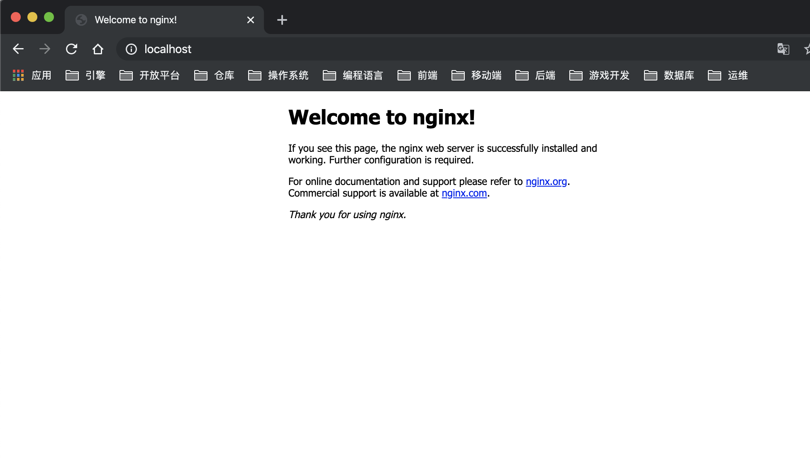
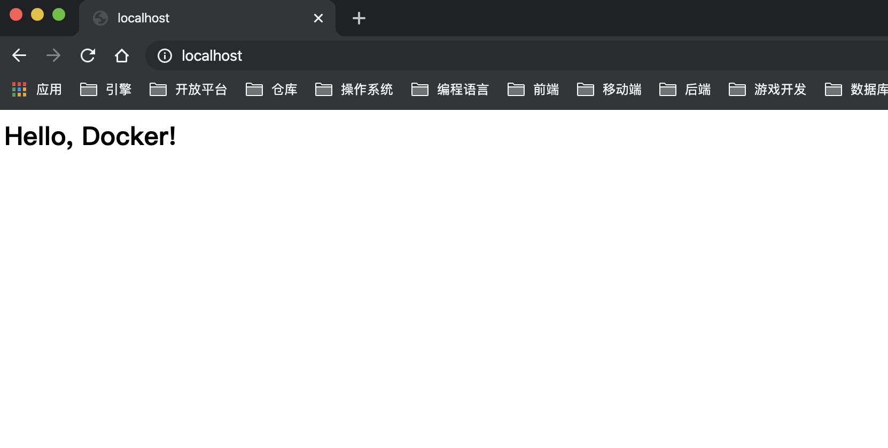
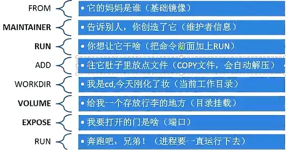

<!DOCTYPE html>


  


<html class="theme-next mist use-motion" lang="zh-CN">
<head><meta name="generator" content="Hexo 3.9.0">
  <meta charset="UTF-8">
<meta http-equiv="X-UA-Compatible" content="IE=edge">
<meta name="viewport" content="width=device-width, initial-scale=1, maximum-scale=2">
<meta name="theme-color" content="#222">


  
  
    
    
  <script src="/lib/pace/pace.min.js?v=1.0.2"></script>
  <link href="/lib/pace/pace-theme-flash.min.css?v=1.0.2" rel="stylesheet">


<meta http-equiv="Cache-Control" content="no-transform">
<meta http-equiv="Cache-Control" content="no-siteapp">


  
  
    
  
  <link href="//cdn.jsdelivr.net/gh/fancyapps/fancybox@3/dist/jquery.fancybox.min.css" rel="stylesheet" type="text/css">


<link href="/lib/font-awesome/css/font-awesome.min.css?v=4.6.2" rel="stylesheet" type="text/css">

<link href="/css/main.css?v=6.4.1" rel="stylesheet" type="text/css">


  <link rel="apple-touch-icon" sizes="180x180" href="/images/apple-touch-icon-next.png?v=6.4.1">


  <link rel="icon" type="image/png" sizes="32x32" href="/images/favicon.ico?v=6.4.1">


  <link rel="icon" type="image/png" sizes="16x16" href="/images/favicon.ico?v=6.4.1">


  <link rel="mask-icon" href="/images/logo.svg?v=6.4.1" color="#222">


<script type="text/javascript" id="hexo.configurations">
  var NexT = window.NexT || {};
  var CONFIG = {
    root: '/',
    scheme: 'Mist',
    version: '6.4.1',
    sidebar: {"position":"left","display":"post","offset":12,"b2t":false,"scrollpercent":false,"onmobile":false},
    fancybox: true,
    fastclick: false,
    lazyload: false,
    tabs: true,
    motion: {"enable":true,"async":true,"transition":{"post_block":"fadeIn","post_header":"slideDownIn","post_body":"slideDownIn","coll_header":"slideLeftIn","sidebar":"slideUpIn"}},
    algolia: {
      applicationID: '',
      apiKey: '',
      indexName: '',
      hits: {"per_page":10},
      labels: {"input_placeholder":"Search for Posts","hits_empty":"We didn't find any results for the search: ${query}","hits_stats":"${hits} results found in ${time} ms"}
    }
  };
</script>


  


<script type="text/javascript">
    (function () {
        if ('') {
            if (prompt('请输入访问密码') !== '') {
                alert('密码错误！');
                if (history.length === 1) {
                    location.replace("https://hackycy.github.io");
                } else {
                    history.back();
                }
            }
        }
    })();
</script>

  <meta name="description" content="Dockerfile简介Dockerfile 是一个用来构建镜像的文本文件，文本内容包含了一条条构建镜像所需的指令和说明。">
<meta name="keywords" content="Docker">
<meta property="og:type" content="article">
<meta property="og:title" content="Docker入门（五）——Dockerfile">
<meta property="og:url" content="http://hackycy.github.io/2019/12/05/Docker入门（五）——Dockerfile/index.html">
<meta property="og:site_name" content="思忆技术">
<meta property="og:description" content="Dockerfile简介Dockerfile 是一个用来构建镜像的文本文件，文本内容包含了一条条构建镜像所需的指令和说明。">
<meta property="og:locale" content="zh-CN">
<meta property="og:image" content="http://hackycy.github.io/2019/12/05/Docker入门（五）——Dockerfile/commit_hello_nginx.png">
<meta property="og:image" content="http://hackycy.github.io/2019/12/05/Docker入门（五）——Dockerfile/commit_hello_nginx2.png">
<meta property="og:image" content="http://hackycy.github.io/2019/12/05/Docker入门（五）——Dockerfile/command.webp">
<meta property="og:updated_time" content="2021-01-05T13:18:05.331Z">
<meta name="twitter:card" content="summary">
<meta name="twitter:title" content="Docker入门（五）——Dockerfile">
<meta name="twitter:description" content="Dockerfile简介Dockerfile 是一个用来构建镜像的文本文件，文本内容包含了一条条构建镜像所需的指令和说明。">
<meta name="twitter:image" content="http://hackycy.github.io/2019/12/05/Docker入门（五）——Dockerfile/commit_hello_nginx.png">


  <link rel="alternate" href="/atom.xml" title="思忆技术" type="application/atom+xml">


  <link rel="canonical" href="http://hackycy.github.io/2019/12/05/Docker入门（五）——Dockerfile/">


<script type="text/javascript" id="page.configurations">
  CONFIG.page = {
    sidebar: "",
  };
</script>

  <title>Docker入门（五）——Dockerfile | 思忆技术</title>
  


  <script type="text/javascript">
    var _hmt = _hmt || [];
    (function() {
      var hm = document.createElement("script");
      hm.src = "https://hm.baidu.com/hm.js?8a525e92400d0ab6fc5484cce235a326";
      var s = document.getElementsByTagName("script")[0];
      s.parentNode.insertBefore(hm, s);
    })();
  </script>


  <noscript>
  <style type="text/css">
    .use-motion .motion-element,
    .use-motion .brand,
    .use-motion .menu-item,
    .sidebar-inner,
    .use-motion .post-block,
    .use-motion .pagination,
    .use-motion .comments,
    .use-motion .post-header,
    .use-motion .post-body,
    .use-motion .collection-title { opacity: initial; }

    .use-motion .logo,
    .use-motion .site-title,
    .use-motion .site-subtitle {
      opacity: initial;
      top: initial;
    }

    .use-motion {
      .logo-line-before i { left: initial; }
      .logo-line-after i { right: initial; }
    }
  </style>
</noscript>

</head>

<body itemscope itemtype="http://schema.org/WebPage" lang="zh-CN">

  
  
    
  

  <div class="container sidebar-position-left page-post-detail">
    <div class="headband"></div>

    <header id="header" class="header" itemscope itemtype="http://schema.org/WPHeader">
      <div class="header-inner"><div class="site-brand-wrapper">
  <div class="site-meta ">
    

    <div class="custom-logo-site-title">
      <a href="/" class="brand" rel="start">
        <span class="logo-line-before"><i></i></span>
        <span class="site-title">思忆技术</span>
        <span class="logo-line-after"><i></i></span>
      </a>
    </div>
    
      
        <h1 class="site-subtitle" itemprop="description">思忆，分享技术</h1>
      
    
  </div>

  <div class="site-nav-toggle">
    <button aria-label="切换导航栏">
      <span class="btn-bar"></span>
      <span class="btn-bar"></span>
      <span class="btn-bar"></span>
    </button>
  </div>
</div>


<nav class="site-nav">
  
    <ul id="menu" class="menu">
      
        
        
        
          
          <li class="menu-item menu-item-home">
    <a href="/" rel="section">
      <i class="menu-item-icon fa fa-fw fa-home"></i> <br>首页</a>
  </li>
        
        
        
          
          <li class="menu-item menu-item-about">
    <a href="/about/" rel="section">
      <i class="menu-item-icon fa fa-fw fa-user"></i> <br>关于</a>
  </li>
        
        
        
          
          <li class="menu-item menu-item-tags">
    <a href="/tags/" rel="section">
      <i class="menu-item-icon fa fa-fw fa-tags"></i> <br>标签<span class="badge">65</span></a>
  </li>
        
        
        
          
          <li class="menu-item menu-item-categories">
    <a href="/categories/" rel="section">
      <i class="menu-item-icon fa fa-fw fa-th"></i> <br>分类<span class="badge">27</span></a>
  </li>
        
        
        
          
          <li class="menu-item menu-item-archives">
    <a href="/archives/" rel="section">
      <i class="menu-item-icon fa fa-fw fa-archive"></i> <br>归档<span class="badge">141</span></a>
  </li>
        
        
        
          
          <li class="menu-item menu-item-schedule">
    <a href="/schedule/" rel="section">
      <i class="menu-item-icon fa fa-fw fa-calendar"></i> <br>日程表</a>
  </li>

      
      
    </ul>
  

  
    

  

  
</nav>


  


</div>
    </header>

    


    <main id="main" class="main">
      <div class="main-inner">
        <div class="content-wrap">
          
          <div id="content" class="content">
            

  <div id="posts" class="posts-expand">
    

  

  
  
  

  
    <div class="reading-progress-bar"></div>
  

  <article class="post post-type-normal" itemscope itemtype="http://schema.org/Article">
  
  
  
  <div class="post-block">
    <link itemprop="mainEntityOfPage" href="http://hackycy.github.io/2019/12/05/Docker入门（五）——Dockerfile/">

    <span hidden itemprop="author" itemscope itemtype="http://schema.org/Person">
      <meta itemprop="name" content="hackycy">
      <meta itemprop="description" content="“被窝是天堂开设在人间的分店。”">
      <meta itemprop="image" content="https://tvax3.sinaimg.cn/crop.0.0.1006.1006.180/006oXysjly8g5r75wnp14j30ry0rydi1.jpg">
    </span>

    <span hidden itemprop="publisher" itemscope itemtype="http://schema.org/Organization">
      <meta itemprop="name" content="思忆技术">
    </span>

    
      <header class="post-header">

        
        
          <h2 class="post-title" itemprop="name headline">Docker入门（五）——Dockerfile
              
            
          </h2>
        

        <div class="post-meta">
          <span class="post-time">

            
            
            

            
              <span class="post-meta-item-icon">
                <i class="fa fa-calendar-o"></i>
              </span>
              
                <span class="post-meta-item-text">发表于</span>
              

              
                
              

              <time title="创建时间：2019-12-05 15:23:52" itemprop="dateCreated datePublished" datetime="2019-12-05T15:23:52+00:00">2019-12-05</time>
            

            
              

              
                
                <span class="post-meta-divider">|</span>
                

                <span class="post-meta-item-icon">
                  <i class="fa fa-calendar-check-o"></i>
                </span>
                
                  <span class="post-meta-item-text">更新于</span>
                
                <time title="修改时间：2021-01-05 13:18:05" itemprop="dateModified" datetime="2021-01-05T13:18:05+00:00">2021-01-05</time>
              
            
          </span>

          
            <span class="post-category">
            
              <span class="post-meta-divider">|</span>
            
              <span class="post-meta-item-icon">
                <i class="fa fa-folder-o"></i>
              </span>
              
                <span class="post-meta-item-text">分类于</span>
              
              
                <span itemprop="about" itemscope itemtype="http://schema.org/Thing"><a href="/categories/Docker/" itemprop="url" rel="index"><span itemprop="name">Docker</span></a></span>

                
                
              
            </span>
          

          
            
              <span class="post-comments-count">
                <span class="post-meta-divider">|</span>
                <span class="post-meta-item-icon">
                  <i class="fa fa-comment-o"></i>
                </span>
                <a href="/2019/12/05/Docker入门（五）——Dockerfile/#comments" itemprop="discussionUrl">
                
                  <span class="post-comments-count disqus-comment-count" data-disqus-identifier="2019/12/05/Docker入门（五）——Dockerfile/" itemprop="commentCount"></span>
                </a>
              </span>
            
          

          
          

          

          

          

          
            <span class="post-letters-count">
                &nbsp; | &nbsp;
              <i class="fa fa-align-right"></i>
              <span>字数统计:17k字</span>
                &nbsp; | &nbsp;
              <i class="fa fa-align-left"></i>
              <span>阅读时长:66分</span>
            </span>
          

        </div>
      </header>
    

    
    
    
    <div class="post-body" itemprop="articleBody">

      
      

      
        <h1 id="Dockerfile简介"><a href="#Dockerfile简介" class="headerlink" title="Dockerfile简介"></a>Dockerfile简介</h1><p>Dockerfile 是一个用来构建镜像的文本文件，文本内容包含了一条条构建镜像所需的指令和说明。</p>
<a id="more"></a>
<h1 id="利用-commit-理解镜像构成"><a href="#利用-commit-理解镜像构成" class="headerlink" title="利用 commit 理解镜像构成"></a>利用 commit 理解镜像构成</h1><p>理解Dockerfile定制镜像前先来了解一下<code>docker commit</code>。</p>
<p>镜像是容器的基础，每次执行 <code>docker run</code> 的时候都会指定哪个镜像作为容器运行的基础。在之前的例子中，我们所使用的都是来自于 Docker Hub 的镜像。直接使用这些镜像是可以满足一定的需求，而当这些镜像无法直接满足需求时，我们就需要定制这些镜像。</p>
<p>镜像是多层存储，每一层是在前一层的基础上进行的修改；而容器同样也是多层存储，是在以镜像为基础层，在其基础上加一层作为容器运行时的存储层。</p>
<p>现在让我们以定制一个 Web 服务器为例子，来讲解镜像是如何构建的。</p>
<figure class="highlight bash"><table><tr><td class="gutter"><pre><span class="line">1</span><br></pre></td><td class="code"><pre><span class="line">$ docker run --name webserver -d -p 80:80 nginx</span><br></pre></td></tr></table></figure>
<p>这条命令会用 <code>nginx</code> 镜像启动一个容器，命名为 <code>webserver</code>，并且映射了 80 端口，这样我们可以用浏览器去访问这个 <code>nginx</code> 服务器。</p>
<p>如果是在 Linux 本机运行的 Docker，或者如果使用的是 Docker Desktop for Mac/Windows，那么可以直接访问：<a href="http://localhost/" target="_blank" rel="noopener">http://localhost</a>；如果使用的是 Docker Toolbox，或者是在虚拟机、云服务器上安装的 Docker，则需要将 <code>localhost</code> 换为虚拟机地址或者实际云服务器地址。</p>
<p>直接用浏览器访问的话，我们会看到默认的 Nginx 欢迎页面。</p>
<p></p>
<p>现在，假设我们非常不喜欢这个欢迎页面，我们希望改成欢迎 Docker 的文字，我们可以使用 <code>docker exec</code> 命令进入容器，修改其内容。</p>
<figure class="highlight bash"><table><tr><td class="gutter"><pre><span class="line">1</span><br><span class="line">2</span><br><span class="line">3</span><br><span class="line">4</span><br></pre></td><td class="code"><pre><span class="line">$ docker <span class="built_in">exec</span> -it webserver bash</span><br><span class="line">root@3e3b6840ce9a:/<span class="comment"># echo '&lt;h1&gt;Hello, Docker!&lt;/h1&gt;' &gt; /usr/share/nginx/html/index.html</span></span><br><span class="line">root@3e3b6840ce9a:/<span class="comment"># exit</span></span><br><span class="line"><span class="built_in">exit</span></span><br></pre></td></tr></table></figure>
<p>我们以交互式终端方式进入 <code>webserver</code> 容器，并执行了 <code>bash</code> 命令，也就是获得一个可操作的 Shell。</p>
<p>然后，我们用 <code>Hello, Docker!</code> 覆盖了 <code>/usr/share/nginx/html/index.html</code> 的内容。</p>
<p>现在我们再刷新浏览器的话，会发现内容被改变了。</p>
<p></p>
<p>现在我们定制好了变化，我们希望能将其保存下来形成镜像。</p>
<p>要知道，当我们运行一个容器的时候（如果不使用卷的话），我们做的任何文件修改都会被记录于容器存储层里。而 Docker 提供了一个 <code>docker commit</code> 命令，可以将容器的存储层保存下来成为镜像。换句话说，就是在原有镜像的基础上，再叠加上容器的存储层，并构成新的镜像。以后我们运行这个新镜像的时候，就会拥有原有容器最后的文件变化。</p>
<p><code>docker commit</code> 的语法格式为：</p>
<figure class="highlight bash"><table><tr><td class="gutter"><pre><span class="line">1</span><br></pre></td><td class="code"><pre><span class="line">docker commit [选项] &lt;容器ID或容器名&gt; [&lt;仓库名&gt;[:&lt;标签&gt;]]</span><br></pre></td></tr></table></figure>
<p>我们可以用下面的命令将容器保存为镜像：</p>
<figure class="highlight bash"><table><tr><td class="gutter"><pre><span class="line">1</span><br><span class="line">2</span><br><span class="line">3</span><br><span class="line">4</span><br><span class="line">5</span><br><span class="line">6</span><br></pre></td><td class="code"><pre><span class="line">$ docker commit \</span><br><span class="line">    --author <span class="string">"Tao Wang &lt;twang2218@gmail.com&gt;"</span> \</span><br><span class="line">    --message <span class="string">"修改了默认网页"</span> \</span><br><span class="line">    webserver \</span><br><span class="line">    nginx:v2</span><br><span class="line">sha256:07e33465974800ce65751acc279adc6ed2dc5ed4e0838f8b86f0c87aa1795214</span><br></pre></td></tr></table></figure>
<p>其中 <code>--author</code> 是指定修改的作者，而 <code>--message</code> 则是记录本次修改的内容。这点和 <code>git</code> 版本控制相似，不过这里这些信息可以省略留空。</p>
<p>我们可以在 <code>docker image ls</code> 中看到这个新定制的镜像：</p>
<figure class="highlight bash"><table><tr><td class="gutter"><pre><span class="line">1</span><br><span class="line">2</span><br><span class="line">3</span><br><span class="line">4</span><br><span class="line">5</span><br></pre></td><td class="code"><pre><span class="line">$ docker image ls nginx</span><br><span class="line">REPOSITORY          TAG                 IMAGE ID            CREATED             SIZE</span><br><span class="line">nginx               v2                  07e334659748        9 seconds ago       181.5 MB</span><br><span class="line">nginx               1.11                05a60462f8ba        12 days ago         181.5 MB</span><br><span class="line">nginx               latest              e43d811ce2f4        4 weeks ago         181.5 MB</span><br></pre></td></tr></table></figure>
<p>我们还可以用 <code>docker history</code> 具体查看镜像内的历史记录，如果比较 <code>nginx:latest</code> 的历史记录，我们会发现新增了我们刚刚提交的这一层。</p>
<figure class="highlight bash"><table><tr><td class="gutter"><pre><span class="line">1</span><br><span class="line">2</span><br><span class="line">3</span><br><span class="line">4</span><br><span class="line">5</span><br><span class="line">6</span><br><span class="line">7</span><br><span class="line">8</span><br><span class="line">9</span><br><span class="line">10</span><br><span class="line">11</span><br></pre></td><td class="code"><pre><span class="line">$ docker <span class="built_in">history</span> nginx:v2</span><br><span class="line">IMAGE               CREATED             CREATED BY                                      SIZE                COMMENT</span><br><span class="line">07e334659748        54 seconds ago      nginx -g daemon off;                            95 B                修改了默认网页</span><br><span class="line">e43d811ce2f4        4 weeks ago         /bin/sh -c <span class="comment">#(nop)  CMD ["nginx" "-g" "daemon    0 B</span></span><br><span class="line">&lt;missing&gt;           4 weeks ago         /bin/sh -c <span class="comment">#(nop)  EXPOSE 443/tcp 80/tcp        0 B</span></span><br><span class="line">&lt;missing&gt;           4 weeks ago         /bin/sh -c ln -sf /dev/stdout /var/<span class="built_in">log</span>/nginx/   22 B</span><br><span class="line">&lt;missing&gt;           4 weeks ago         /bin/sh -c apt-key adv --keyserver hkp://pgp.   58.46 MB</span><br><span class="line">&lt;missing&gt;           4 weeks ago         /bin/sh -c <span class="comment">#(nop)  ENV NGINX_VERSION=1.11.5-1   0 B</span></span><br><span class="line">&lt;missing&gt;           4 weeks ago         /bin/sh -c <span class="comment">#(nop)  MAINTAINER NGINX Docker Ma   0 B</span></span><br><span class="line">&lt;missing&gt;           4 weeks ago         /bin/sh -c <span class="comment">#(nop)  CMD ["/bin/bash"]            0 B</span></span><br><span class="line">&lt;missing&gt;           4 weeks ago         /bin/sh -c <span class="comment">#(nop) ADD file:23aa4f893e3288698c   123 MB</span></span><br></pre></td></tr></table></figure>
<p>新的镜像定制好后，我们可以来运行这个镜像。</p>
<figure class="highlight bash"><table><tr><td class="gutter"><pre><span class="line">1</span><br></pre></td><td class="code"><pre><span class="line">docker run --name web2 -d -p 81:80 nginx:v2</span><br></pre></td></tr></table></figure>
<p>这里我们命名为新的服务为 <code>web2</code>，并且映射到 <code>81</code> 端口。如果是 Docker Desktop for Mac/Windows 或 Linux 桌面的话，我们就可以直接访问 <a href="http://localhost:81/" target="_blank" rel="noopener">http://localhost:81</a> 看到结果，其内容应该和之前修改后的 <code>webserver</code> 一样。</p>
<p>至此，我们第一次完成了定制镜像，使用的是 <code>docker commit</code> 命令，手动操作给旧的镜像添加了新的一层，形成新的镜像，对镜像多层存储应该有了更直观的感觉。</p>
<blockquote>
<p>注意： <code>docker commit</code> 命令除了学习之外，还有一些特殊的应用场合，比如被入侵后保存现场等。但是，不要使用 <code>docker commit</code> 定制镜像，使用 <code>docker commit</code> 命令虽然可以比较直观的帮助理解镜像分层存储的概念，但是实际环境中并不会这样使用。</p>
<p>定制镜像应该使用 <code>Dockerfile</code> 来完成。如果你想要定制镜像请查看下一小节。</p>
</blockquote>
<h1 id="Dockerfile定制镜像"><a href="#Dockerfile定制镜像" class="headerlink" title="Dockerfile定制镜像"></a>Dockerfile定制镜像</h1><p>从<code>docker commit</code>中了解到镜像的定制实际上就是定制每一层所添加的配置、文件。</p>
<p>如果可以把每一层修改、安装、构建、操作的命令都写入一个脚本，用这个脚本来构建、定制镜像，那么之前提及的无法重复的问题、镜像构建透明性的问题、体积的问题就都会解决。这个脚本就是 Dockerfile。</p>
<p>Dockerfile 是一个文本文件，其内包含了一条条的 <strong>指令(Instruction)</strong>，每一条指令构建一层，因此每一条指令的内容，就是描述该层应当如何构建。</p>
<p>还以之前定制 <code>nginx</code> 镜像为例，这次我们使用 Dockerfile 来定制。</p>
<p>在一个空白目录中，建立一个文本文件，并命名为 <code>Dockerfile</code>：</p>
<figure class="highlight bash"><table><tr><td class="gutter"><pre><span class="line">1</span><br><span class="line">2</span><br><span class="line">3</span><br></pre></td><td class="code"><pre><span class="line">$ mkdir mynginx</span><br><span class="line">$ <span class="built_in">cd</span> mynginx</span><br><span class="line">$ touch Dockerfile</span><br></pre></td></tr></table></figure>
<p>其内容为：</p>
<figure class="highlight docker"><table><tr><td class="gutter"><pre><span class="line">1</span><br><span class="line">2</span><br></pre></td><td class="code"><pre><span class="line"><span class="keyword">FROM</span> nginx</span><br><span class="line"><span class="keyword">RUN</span><span class="bash"> <span class="built_in">echo</span> <span class="string">'&lt;h1&gt;Hello, Docker!&lt;/h1&gt;'</span> &gt; /usr/share/nginx/html/index.html</span></span><br></pre></td></tr></table></figure>
<p>这个 Dockerfile 很简单，一共就两行。涉及到了两条指令，<code>FROM</code> 和 <code>RUN</code>。</p>
<h2 id="FROM-指定基础镜像"><a href="#FROM-指定基础镜像" class="headerlink" title="FROM 指定基础镜像"></a>FROM 指定基础镜像</h2><p>所谓定制镜像，那一定是以一个镜像为基础，在其上进行定制。就像我们之前运行了一个 <code>nginx</code> 镜像的容器，再进行修改一样，基础镜像是必须指定的。而 <code>FROM</code> 就是指定 <strong>基础镜像</strong>，因此一个 <code>Dockerfile</code> 中 <code>FROM</code> 是必备的指令，并且必须是第一条指令。</p>
<p>在 <a href="https://hub.docker.com/search?q=&amp;type=image&amp;image_filter=official" target="_blank" rel="noopener">Docker Hub</a> 上有非常多的高质量的官方镜像，有可以直接拿来使用的服务类的镜像，如 <a href="https://hub.docker.com/_/nginx/" target="_blank" rel="noopener"><code>nginx</code></a>、<a href="https://hub.docker.com/_/redis/" target="_blank" rel="noopener"><code>redis</code></a>、<a href="https://hub.docker.com/_/mongo/" target="_blank" rel="noopener"><code>mongo</code></a>、<a href="https://hub.docker.com/_/mysql/" target="_blank" rel="noopener"><code>mysql</code></a>、<a href="https://hub.docker.com/_/httpd/" target="_blank" rel="noopener"><code>httpd</code></a>、<a href="https://hub.docker.com/_/php/" target="_blank" rel="noopener"><code>php</code></a>、<a href="https://hub.docker.com/_/tomcat/" target="_blank" rel="noopener"><code>tomcat</code></a> 等；也有一些方便开发、构建、运行各种语言应用的镜像，如 <a href="https://hub.docker.com/_/node" target="_blank" rel="noopener"><code>node</code></a>、<a href="https://hub.docker.com/_/openjdk/" target="_blank" rel="noopener"><code>openjdk</code></a>、<a href="https://hub.docker.com/_/python/" target="_blank" rel="noopener"><code>python</code></a>、<a href="https://hub.docker.com/_/ruby/" target="_blank" rel="noopener"><code>ruby</code></a>、<a href="https://hub.docker.com/_/golang/" target="_blank" rel="noopener"><code>golang</code></a> 等。可以在其中寻找一个最符合我们最终目标的镜像为基础镜像进行定制。</p>
<p>如果没有找到对应服务的镜像，官方镜像中还提供了一些更为基础的操作系统镜像，如 <a href="https://hub.docker.com/_/ubuntu/" target="_blank" rel="noopener"><code>ubuntu</code></a>、<a href="https://hub.docker.com/_/debian/" target="_blank" rel="noopener"><code>debian</code></a>、<a href="https://hub.docker.com/_/centos/" target="_blank" rel="noopener"><code>centos</code></a>、<a href="https://hub.docker.com/_/fedora/" target="_blank" rel="noopener"><code>fedora</code></a>、<a href="https://hub.docker.com/_/alpine/" target="_blank" rel="noopener"><code>alpine</code></a> 等，这些操作系统的软件库为我们提供了更广阔的扩展空间。</p>
<p>除了选择现有镜像为基础镜像外，Docker 还存在一个特殊的镜像，名为 <code>scratch</code>。这个镜像是虚拟的概念，并不实际存在，它表示一个空白的镜像。</p>
<figure class="highlight docker"><table><tr><td class="gutter"><pre><span class="line">1</span><br><span class="line">2</span><br></pre></td><td class="code"><pre><span class="line"><span class="keyword">FROM</span> scratch</span><br><span class="line">...</span><br></pre></td></tr></table></figure>
<p>如果你以 <code>scratch</code> 为基础镜像的话，意味着你不以任何镜像为基础，接下来所写的指令将作为镜像第一层开始存在。</p>
<p>不以任何系统为基础，直接将可执行文件复制进镜像的做法并不罕见，比如 <a href="https://hub.docker.com/_/swarm/" target="_blank" rel="noopener"><code>swarm</code></a>、<a href="https://quay.io/repository/coreos/etcd" target="_blank" rel="noopener"><code>etcd</code></a>。对于 Linux 下静态编译的程序来说，并不需要有操作系统提供运行时支持，所需的一切库都已经在可执行文件里了，因此直接 <code>FROM scratch</code> 会让镜像体积更加小巧。使用 <a href="https://golang.org/" target="_blank" rel="noopener">Go 语言</a> 开发的应用很多会使用这种方式来制作镜像，这也是为什么有人认为 Go 是特别适合容器微服务架构的语言的原因之一。</p>
<h2 id="RUN-执行命令"><a href="#RUN-执行命令" class="headerlink" title="RUN 执行命令"></a>RUN 执行命令</h2><p><code>RUN</code> 指令是用来执行命令行命令的。由于命令行的强大能力，<code>RUN</code> 指令在定制镜像时是最常用的指令之一。其格式有两种：</p>
<ul>
<li><em>shell</em> 格式：<code>RUN &lt;命令&gt;</code>，就像直接在命令行中输入的命令一样。刚才写的 Dockerfile 中的 <code>RUN</code> 指令就是这种格式。</li>
</ul>
<figure class="highlight docker"><table><tr><td class="gutter"><pre><span class="line">1</span><br></pre></td><td class="code"><pre><span class="line"><span class="keyword">RUN</span><span class="bash"> <span class="built_in">echo</span> <span class="string">'&lt;h1&gt;Hello, Docker!&lt;/h1&gt;'</span> &gt; /usr/share/nginx/html/index.html</span></span><br></pre></td></tr></table></figure>
<ul>
<li><em>exec</em> 格式：<code>RUN [&quot;可执行文件&quot;, &quot;参数1&quot;, &quot;参数2&quot;]</code>，这更像是函数调用中的格式。</li>
</ul>
<p>既然 <code>RUN</code> 就像 Shell 脚本一样可以执行命令，那么我们是否就可以像 Shell 脚本一样把每个命令对应一个 RUN 呢？比如这样：</p>
<figure class="highlight docker"><table><tr><td class="gutter"><pre><span class="line">1</span><br><span class="line">2</span><br><span class="line">3</span><br><span class="line">4</span><br><span class="line">5</span><br><span class="line">6</span><br><span class="line">7</span><br><span class="line">8</span><br><span class="line">9</span><br></pre></td><td class="code"><pre><span class="line"><span class="keyword">FROM</span> debian:stretch</span><br><span class="line"></span><br><span class="line"><span class="keyword">RUN</span><span class="bash"> apt-get update</span></span><br><span class="line"><span class="keyword">RUN</span><span class="bash"> apt-get install -y gcc libc6-dev make wget</span></span><br><span class="line"><span class="keyword">RUN</span><span class="bash"> wget -O redis.tar.gz <span class="string">"http://download.redis.io/releases/redis-5.0.3.tar.gz"</span></span></span><br><span class="line"><span class="keyword">RUN</span><span class="bash"> mkdir -p /usr/src/redis</span></span><br><span class="line"><span class="keyword">RUN</span><span class="bash"> tar -xzf redis.tar.gz -C /usr/src/redis --strip-components=1</span></span><br><span class="line"><span class="keyword">RUN</span><span class="bash"> make -C /usr/src/redis</span></span><br><span class="line"><span class="keyword">RUN</span><span class="bash"> make -C /usr/src/redis install</span></span><br></pre></td></tr></table></figure>
<p>之前说过，Dockerfile 中每一个指令都会建立一层，<code>RUN</code> 也不例外。每一个 <code>RUN</code> 的行为，就和刚才我们手工建立镜像的过程一样：新建立一层，在其上执行这些命令，执行结束后，<code>commit</code> 这一层的修改，构成新的镜像。</p>
<p>而上面的这种写法，创建了 7 层镜像。这是完全没有意义的，而且很多运行时不需要的东西，都被装进了镜像里，比如编译环境、更新的软件包等等。结果就是产生非常臃肿、非常多层的镜像，不仅仅增加了构建部署的时间，也很容易出错。 这是很多初学 Docker 的人常犯的一个错误。</p>
<p><em>Union FS 是有最大层数限制的，比如 AUFS，曾经是最大不得超过 42 层，现在是不得超过 127 层。</em></p>
<p>上面的 <code>Dockerfile</code> 正确的写法应该是这样：</p>
<figure class="highlight docker"><table><tr><td class="gutter"><pre><span class="line">1</span><br><span class="line">2</span><br><span class="line">3</span><br><span class="line">4</span><br><span class="line">5</span><br><span class="line">6</span><br><span class="line">7</span><br><span class="line">8</span><br><span class="line">9</span><br><span class="line">10</span><br><span class="line">11</span><br><span class="line">12</span><br><span class="line">13</span><br><span class="line">14</span><br></pre></td><td class="code"><pre><span class="line"><span class="keyword">FROM</span> debian:stretch</span><br><span class="line"></span><br><span class="line"><span class="keyword">RUN</span><span class="bash"> buildDeps=<span class="string">'gcc libc6-dev make wget'</span> \</span></span><br><span class="line"><span class="bash">    &amp;&amp; apt-get update \</span></span><br><span class="line"><span class="bash">    &amp;&amp; apt-get install -y <span class="variable">$buildDeps</span> \</span></span><br><span class="line"><span class="bash">    &amp;&amp; wget -O redis.tar.gz <span class="string">"http://download.redis.io/releases/redis-5.0.3.tar.gz"</span> \</span></span><br><span class="line"><span class="bash">    &amp;&amp; mkdir -p /usr/src/redis \</span></span><br><span class="line"><span class="bash">    &amp;&amp; tar -xzf redis.tar.gz -C /usr/src/redis --strip-components=1 \</span></span><br><span class="line"><span class="bash">    &amp;&amp; make -C /usr/src/redis \</span></span><br><span class="line"><span class="bash">    &amp;&amp; make -C /usr/src/redis install \</span></span><br><span class="line"><span class="bash">    &amp;&amp; rm -rf /var/lib/apt/lists/* \</span></span><br><span class="line"><span class="bash">    &amp;&amp; rm redis.tar.gz \</span></span><br><span class="line"><span class="bash">    &amp;&amp; rm -r /usr/src/redis \</span></span><br><span class="line"><span class="bash">    &amp;&amp; apt-get purge -y --auto-remove <span class="variable">$buildDeps</span></span></span><br></pre></td></tr></table></figure>
<p>首先，之前所有的命令只有一个目的，就是编译、安装 redis 可执行文件。因此没有必要建立很多层，这只是一层的事情。因此，这里没有使用很多个 <code>RUN</code> 对一一对应不同的命令，而是仅仅使用一个 <code>RUN</code> 指令，并使用 <code>&amp;&amp;</code> 将各个所需命令串联起来。将之前的 7 层，简化为了 1 层。在撰写 Dockerfile 的时候，要经常提醒自己，这并不是在写 Shell 脚本，而是在定义每一层该如何构建。</p>
<p>并且，这里为了格式化还进行了换行。Dockerfile 支持 Shell 类的行尾添加 <code>\</code> 的命令换行方式，以及行首 <code>#</code> 进行注释的格式。良好的格式，比如换行、缩进、注释等，会让维护、排障更为容易，这是一个比较好的习惯。</p>
<p>此外，还可以看到这一组命令的最后添加了清理工作的命令，删除了为了编译构建所需要的软件，清理了所有下载、展开的文件，并且还清理了 <code>apt</code> 缓存文件。这是很重要的一步，我们之前说过，镜像是多层存储，每一层的东西并不会在下一层被删除，会一直跟随着镜像。因此镜像构建时，一定要确保每一层只添加真正需要添加的东西，任何无关的东西都应该清理掉。</p>
<p>很多人初学 Docker 制作出了很臃肿的镜像的原因之一，就是忘记了每一层构建的最后一定要清理掉无关文件。</p>
<h2 id="构建镜像"><a href="#构建镜像" class="headerlink" title="构建镜像"></a>构建镜像</h2><p>好了，让我们再回到之前定制的 nginx 镜像的 Dockerfile 来。现在我们明白了这个 Dockerfile 的内容，那么让我们来构建这个镜像吧。</p>
<p>在 <code>Dockerfile</code> 文件所在目录执行：</p>
<figure class="highlight bash"><table><tr><td class="gutter"><pre><span class="line">1</span><br><span class="line">2</span><br><span class="line">3</span><br><span class="line">4</span><br><span class="line">5</span><br><span class="line">6</span><br><span class="line">7</span><br><span class="line">8</span><br><span class="line">9</span><br></pre></td><td class="code"><pre><span class="line">$ docker build -t nginx:v3 .</span><br><span class="line">Sending build context to Docker daemon 2.048 kB</span><br><span class="line">Step 1 : FROM nginx</span><br><span class="line"> ---&gt; e43d811ce2f4</span><br><span class="line">Step 2 : RUN <span class="built_in">echo</span> <span class="string">'&lt;h1&gt;Hello, Docker!&lt;/h1&gt;'</span> &gt; /usr/share/nginx/html/index.html</span><br><span class="line"> ---&gt; Running <span class="keyword">in</span> 9cdc27646c7b</span><br><span class="line"> ---&gt; 44aa4490ce2c</span><br><span class="line">Removing intermediate container 9cdc27646c7b</span><br><span class="line">Successfully built 44aa4490ce2c</span><br></pre></td></tr></table></figure>
<p>从命令的输出结果中，我们可以清晰的看到镜像的构建过程。在 <code>Step 2</code> 中，如同我们之前所说的那样，<code>RUN</code> 指令启动了一个容器 <code>9cdc27646c7b</code>，执行了所要求的命令，并最后提交了这一层 <code>44aa4490ce2c</code>，随后删除了所用到的这个容器 <code>9cdc27646c7b</code>。</p>
<p>这里我们使用了 <code>docker build</code> 命令进行镜像构建。其格式为：</p>
<figure class="highlight bash"><table><tr><td class="gutter"><pre><span class="line">1</span><br></pre></td><td class="code"><pre><span class="line">docker build [选项] &lt;上下文路径/URL/-&gt;</span><br></pre></td></tr></table></figure>
<p>在这里我们指定了最终镜像的名称 <code>-t nginx:v3</code>，构建成功后，我们可以像之前运行 <code>nginx:v2</code> 那样来运行这个镜像，其结果会和 <code>nginx:v2</code> 一样。</p>
<h2 id="镜像构建上下文（Context）"><a href="#镜像构建上下文（Context）" class="headerlink" title="镜像构建上下文（Context）"></a>镜像构建上下文（Context）</h2><p>如果注意，会看到 <code>docker build</code> 命令最后有一个 <code>.</code>。<code>.</code> 表示当前目录，而 <code>Dockerfile</code> 就在当前目录，因此不少初学者以为这个路径是在指定 <code>Dockerfile</code> 所在路径，这么理解其实是不准确的。如果对应上面的命令格式，你可能会发现，这是在指定 <strong>上下文路径</strong>。那么什么是上下文呢？</p>
<p>首先我们要理解 <code>docker build</code> 的工作原理。Docker 在运行时分为 Docker 引擎（也就是服务端守护进程）和客户端工具。Docker 的引擎提供了一组 REST API，被称为 <a href="https://docs.docker.com/develop/sdk/" target="_blank" rel="noopener">Docker Remote API</a>，而如 <code>docker</code> 命令这样的客户端工具，则是通过这组 API 与 Docker 引擎交互，从而完成各种功能。因此，虽然表面上我们好像是在本机执行各种 <code>docker</code> 功能，但实际上，一切都是使用的远程调用形式在服务端（Docker 引擎）完成。也因为这种 C/S 设计，让我们操作远程服务器的 Docker 引擎变得轻而易举。</p>
<p>当我们进行镜像构建的时候，并非所有定制都会通过 <code>RUN</code> 指令完成，经常会需要将一些本地文件复制进镜像，比如通过 <code>COPY</code> 指令、<code>ADD</code> 指令等。而 <code>docker build</code> 命令构建镜像，其实并非在本地构建，而是在服务端，也就是 Docker 引擎中构建的。那么在这种客户端/服务端的架构中，如何才能让服务端获得本地文件呢？</p>
<p>这就引入了上下文的概念。当构建的时候，用户会指定构建镜像上下文的路径，<code>docker build</code> 命令得知这个路径后，会将路径下的所有内容打包，然后上传给 Docker 引擎。这样 Docker 引擎收到这个上下文包后，展开就会获得构建镜像所需的一切文件。</p>
<p>如果在 <code>Dockerfile</code> 中这么写：</p>
<figure class="highlight docker"><table><tr><td class="gutter"><pre><span class="line">1</span><br></pre></td><td class="code"><pre><span class="line"><span class="keyword">COPY</span><span class="bash"> ./package.json /app/</span></span><br></pre></td></tr></table></figure>
<p>这并不是要复制执行 <code>docker build</code> 命令所在的目录下的 <code>package.json</code>，也不是复制 <code>Dockerfile</code> 所在目录下的 <code>package.json</code>，而是复制 <strong>上下文（context）</strong> 目录下的 <code>package.json</code>。</p>
<p>因此，<code>COPY</code> 这类指令中的源文件的路径都是<em>相对路径</em>。这也是初学者经常会问的为什么 <code>COPY ../package.json /app</code> 或者 <code>COPY /opt/xxxx /app</code> 无法工作的原因，因为这些路径已经超出了上下文的范围，Docker 引擎无法获得这些位置的文件。如果真的需要那些文件，应该将它们复制到上下文目录中去。</p>
<p>现在就可以理解刚才的命令 <code>docker build -t nginx:v3 .</code> 中的这个 <code>.</code>，实际上是在指定上下文的目录，<code>docker build</code> 命令会将该目录下的内容打包交给 Docker 引擎以帮助构建镜像。</p>
<p>如果观察 <code>docker build</code> 输出，我们其实已经看到了这个发送上下文的过程：</p>
<figure class="highlight bash"><table><tr><td class="gutter"><pre><span class="line">1</span><br><span class="line">2</span><br><span class="line">3</span><br></pre></td><td class="code"><pre><span class="line">$ docker build -t nginx:v3 .</span><br><span class="line">Sending build context to Docker daemon 2.048 kB</span><br><span class="line">...</span><br></pre></td></tr></table></figure>
<p>理解构建上下文对于镜像构建是很重要的，避免犯一些不应该的错误。比如有些初学者在发现 <code>COPY /opt/xxxx /app</code> 不工作后，于是干脆将 <code>Dockerfile</code> 放到了硬盘根目录去构建，结果发现 <code>docker build</code> 执行后，在发送一个几十 GB 的东西，极为缓慢而且很容易构建失败。那是因为这种做法是在让 <code>docker build</code> 打包整个硬盘，这显然是使用错误。</p>
<p>一般来说，应该会将 <code>Dockerfile</code> 置于一个空目录下，或者项目根目录下。如果该目录下没有所需文件，那么应该把所需文件复制一份过来。如果目录下有些东西确实不希望构建时传给 Docker 引擎，那么可以用 <code>.gitignore</code> 一样的语法写一个 <code>.dockerignore</code>，该文件是用于剔除不需要作为上下文传递给 Docker 引擎的。</p>
<p>那么为什么会有人误以为 <code>.</code> 是指定 <code>Dockerfile</code> 所在目录呢？这是因为在默认情况下，如果不额外指定 <code>Dockerfile</code> 的话，会将上下文目录下的名为 <code>Dockerfile</code> 的文件作为 Dockerfile。</p>
<p>这只是默认行为，实际上 <code>Dockerfile</code> 的文件名并不要求必须为 <code>Dockerfile</code>，而且并不要求必须位于上下文目录中，比如可以用 <code>-f ../Dockerfile.php</code> 参数指定某个文件作为 <code>Dockerfile</code>。</p>
<p>一般使用默认的文件名 <code>Dockerfile</code>，以及会将其置于镜像构建上下文目录中。</p>
<h2 id="其它-docker-build-的用法"><a href="#其它-docker-build-的用法" class="headerlink" title="其它 docker build 的用法"></a>其它 <code>docker build</code> 的用法</h2><h3 id="直接用-Git-repo-进行构建"><a href="#直接用-Git-repo-进行构建" class="headerlink" title="直接用 Git repo 进行构建"></a>直接用 Git repo 进行构建</h3><p>或许你已经注意到了，<code>docker build</code> 还支持从 URL 构建，比如可以直接从 Git repo 中构建：</p>
<figure class="highlight bash"><table><tr><td class="gutter"><pre><span class="line">1</span><br><span class="line">2</span><br><span class="line">3</span><br><span class="line">4</span><br><span class="line">5</span><br><span class="line">6</span><br><span class="line">7</span><br><span class="line">8</span><br></pre></td><td class="code"><pre><span class="line">$ docker build https://github.com/twang2218/gitlab-ce-zh.git<span class="comment">#:11.1</span></span><br><span class="line"></span><br><span class="line">Sending build context to Docker daemon 2.048 kB</span><br><span class="line">Step 1 : FROM gitlab/gitlab-ce:11.1.0-ce.0</span><br><span class="line">11.1.0-ce.0: Pulling from gitlab/gitlab-ce</span><br><span class="line">aed15891ba52: Already exists</span><br><span class="line">773ae8583d14: Already exists</span><br><span class="line">...</span><br></pre></td></tr></table></figure>
<p>这行命令指定了构建所需的 Git repo，并且指定默认的 <code>master</code> 分支，构建目录为 <code>/11.1/</code>，然后 Docker 就会自己去 <code>git clone</code> 这个项目、切换到指定分支、并进入到指定目录后开始构建。</p>
<h3 id="用给定的-tar-压缩包构建"><a href="#用给定的-tar-压缩包构建" class="headerlink" title="用给定的 tar 压缩包构建"></a>用给定的 tar 压缩包构建</h3><figure class="highlight bash"><table><tr><td class="gutter"><pre><span class="line">1</span><br></pre></td><td class="code"><pre><span class="line">$ docker build http://server/context.tar.gz</span><br></pre></td></tr></table></figure>
<p>如果所给出的 URL 不是个 Git repo，而是个 <code>tar</code> 压缩包，那么 Docker 引擎会下载这个包，并自动解压缩，以其作为上下文，开始构建。</p>
<h3 id="从标准输入中读取-Dockerfile-进行构建"><a href="#从标准输入中读取-Dockerfile-进行构建" class="headerlink" title="从标准输入中读取 Dockerfile 进行构建"></a>从标准输入中读取 Dockerfile 进行构建</h3><figure class="highlight bash"><table><tr><td class="gutter"><pre><span class="line">1</span><br></pre></td><td class="code"><pre><span class="line">docker build - &lt; Dockerfile</span><br></pre></td></tr></table></figure>
<p>或</p>
<figure class="highlight bash"><table><tr><td class="gutter"><pre><span class="line">1</span><br></pre></td><td class="code"><pre><span class="line">cat Dockerfile | docker build -</span><br></pre></td></tr></table></figure>
<p>如果标准输入传入的是文本文件，则将其视为 <code>Dockerfile</code>，并开始构建。这种形式由于直接从标准输入中读取 Dockerfile 的内容，它没有上下文，因此不可以像其他方法那样可以将本地文件 <code>COPY</code> 进镜像之类的事情。</p>
<h3 id="从标准输入中读取上下文压缩包进行构建"><a href="#从标准输入中读取上下文压缩包进行构建" class="headerlink" title="从标准输入中读取上下文压缩包进行构建"></a>从标准输入中读取上下文压缩包进行构建</h3><figure class="highlight bash"><table><tr><td class="gutter"><pre><span class="line">1</span><br></pre></td><td class="code"><pre><span class="line">$ docker build - &lt; context.tar.gz</span><br></pre></td></tr></table></figure>
<p>如果发现标准输入的文件格式是 <code>gzip</code>、<code>bzip2</code> 以及 <code>xz</code> 的话，将会使其为上下文压缩包，直接将其展开，将里面视为上下文，并开始构建。</p>
<h1 id="Dockerfile指令"><a href="#Dockerfile指令" class="headerlink" title="Dockerfile指令"></a>Dockerfile指令</h1><p>一张图来大概了解一下</p>
<p></p>
<h2 id="COPY-复制文件"><a href="#COPY-复制文件" class="headerlink" title="COPY 复制文件"></a>COPY 复制文件</h2><p>格式：</p>
<ul>
<li><code>COPY [--chown=:] &lt;源路径&gt;... &lt;目标路径&gt;</code></li>
<li><code>COPY [--chown=:] [&quot;&lt;源路径1&gt;&quot;,... &quot;&lt;目标路径&gt;&quot;]</code></li>
</ul>
<p>和 <code>RUN</code> 指令一样，也有两种格式，一种类似于命令行，一种类似于函数调用。</p>
<p><code>COPY</code> 指令将从构建上下文目录中 <code>&lt;源路径&gt;</code> 的文件/目录复制到新的一层的镜像内的 <code>&lt;目标路径&gt;</code> 位置。比如：</p>
<figure class="highlight docker"><table><tr><td class="gutter"><pre><span class="line">1</span><br></pre></td><td class="code"><pre><span class="line"><span class="keyword">COPY</span><span class="bash"> package.json /usr/src/app/</span></span><br></pre></td></tr></table></figure>
<p><code>&lt;源路径&gt;</code> 可以是多个，甚至可以是通配符，其通配符规则要满足 Go 的 <a href="https://golang.org/pkg/path/filepath/#Match" target="_blank" rel="noopener"><code>filepath.Match</code></a> 规则，如：</p>
<figure class="highlight docker"><table><tr><td class="gutter"><pre><span class="line">1</span><br><span class="line">2</span><br></pre></td><td class="code"><pre><span class="line"><span class="keyword">COPY</span><span class="bash"> hom* /mydir/</span></span><br><span class="line"><span class="keyword">COPY</span><span class="bash"> hom?.txt /mydir/</span></span><br></pre></td></tr></table></figure>
<p><code>&lt;目标路径&gt;</code> 可以是容器内的绝对路径，也可以是相对于工作目录的相对路径（工作目录可以用 <code>WORKDIR</code> 指令来指定）。目标路径不需要事先创建，如果目录不存在会在复制文件前先行创建缺失目录。</p>
<p>此外，还需要注意一点，使用 <code>COPY</code> 指令，源文件的各种元数据都会保留。比如读、写、执行权限、文件变更时间等。这个特性对于镜像定制很有用。特别是构建相关文件都在使用 Git 进行管理的时候。</p>
<p>在使用该指令的时候还可以加上 <code>--chown=:</code> 选项来改变文件的所属用户及所属组。</p>
<figure class="highlight docker"><table><tr><td class="gutter"><pre><span class="line">1</span><br><span class="line">2</span><br><span class="line">3</span><br><span class="line">4</span><br></pre></td><td class="code"><pre><span class="line"><span class="keyword">COPY</span><span class="bash"> --chown=55:mygroup files* /mydir/</span></span><br><span class="line"><span class="keyword">COPY</span><span class="bash"> --chown=bin files* /mydir/</span></span><br><span class="line"><span class="keyword">COPY</span><span class="bash"> --chown=1 files* /mydir/</span></span><br><span class="line"><span class="keyword">COPY</span><span class="bash"> --chown=10:11 files* /mydir/</span></span><br></pre></td></tr></table></figure>
<h2 id="ADD-更高级的复制文件"><a href="#ADD-更高级的复制文件" class="headerlink" title="ADD 更高级的复制文件"></a>ADD 更高级的复制文件</h2><p><code>ADD</code> 指令和 <code>COPY</code> 的格式和性质基本一致。但是在 <code>COPY</code> 基础上增加了一些功能。</p>
<p>比如 <code>&lt;源路径&gt;</code> 可以是一个 <code>URL</code>，这种情况下，Docker 引擎会试图去下载这个链接的文件放到 <code>&lt;目标路径&gt;</code> 去。下载后的文件权限自动设置为 <code>600</code>，如果这并不是想要的权限，那么还需要增加额外的一层 <code>RUN</code> 进行权限调整，另外，如果下载的是个压缩包，需要解压缩，也一样还需要额外的一层 <code>RUN</code> 指令进行解压缩。所以不如直接使用 <code>RUN</code> 指令，然后使用 <code>wget</code> 或者 <code>curl</code> 工具下载，处理权限、解压缩、然后清理无用文件更合理。因此，这个功能其实并不实用，而且不推荐使用。</p>
<p>如果 <code>&lt;源路径&gt;</code> 为一个 <code>tar</code> 压缩文件的话，压缩格式为 <code>gzip</code>, <code>bzip2</code> 以及 <code>xz</code> 的情况下，<code>ADD</code> 指令将会自动解压缩这个压缩文件到 <code>&lt;目标路径&gt;</code> 去。</p>
<p>在某些情况下，这个自动解压缩的功能非常有用，比如官方镜像 <code>ubuntu</code> 中：</p>
<figure class="highlight docker"><table><tr><td class="gutter"><pre><span class="line">1</span><br><span class="line">2</span><br><span class="line">3</span><br></pre></td><td class="code"><pre><span class="line"><span class="keyword">FROM</span> scratch</span><br><span class="line"><span class="keyword">ADD</span><span class="bash"> ubuntu-xenial-core-cloudimg-amd64-root.tar.gz /</span></span><br><span class="line">...</span><br></pre></td></tr></table></figure>
<p>但在某些情况下，如果我们真的是希望复制个压缩文件进去，而不解压缩，这时就不可以使用 <code>ADD</code> 命令了。</p>
<p>在 Docker 官方的 <a href="https://yeasy.gitbooks.io/docker_practice/content/appendix/best_practices.html" target="_blank" rel="noopener">Dockerfile 最佳实践文档</a> 中要求，尽可能的使用 <code>COPY</code>，因为 <code>COPY</code> 的语义很明确，就是复制文件而已，而 <code>ADD</code> 则包含了更复杂的功能，其行为也不一定很清晰。最适合使用 <code>ADD</code> 的场合，就是所提及的需要自动解压缩的场合。</p>
<p>另外需要注意的是，<code>ADD</code> 指令会令镜像构建缓存失效，从而可能会令镜像构建变得比较缓慢。</p>
<p>因此在 <code>COPY</code> 和 <code>ADD</code> 指令中选择的时候，可以遵循这样的原则，所有的文件复制均使用 <code>COPY</code> 指令，仅在需要自动解压缩的场合使用 <code>ADD</code>。</p>
<p>在使用该指令的时候还可以加上 <code>--chown=:</code> 选项来改变文件的所属用户及所属组。</p>
<figure class="highlight docker"><table><tr><td class="gutter"><pre><span class="line">1</span><br><span class="line">2</span><br><span class="line">3</span><br><span class="line">4</span><br></pre></td><td class="code"><pre><span class="line"><span class="keyword">ADD</span><span class="bash"> --chown=55:mygroup files* /mydir/</span></span><br><span class="line"><span class="keyword">ADD</span><span class="bash"> --chown=bin files* /mydir/</span></span><br><span class="line"><span class="keyword">ADD</span><span class="bash"> --chown=1 files* /mydir/</span></span><br><span class="line"><span class="keyword">ADD</span><span class="bash"> --chown=10:11 files* /mydir/</span></span><br></pre></td></tr></table></figure>
<h2 id="CMD-容器启动命令"><a href="#CMD-容器启动命令" class="headerlink" title="CMD 容器启动命令"></a>CMD 容器启动命令</h2><p><code>CMD</code> 指令的格式和 <code>RUN</code> 相似，也是两种格式：</p>
<ul>
<li><code>shell</code> 格式：<code>CMD &lt;命令&gt;</code></li>
<li><code>exec</code> 格式：<code>CMD [&quot;可执行文件&quot;, &quot;参数1&quot;, &quot;参数2&quot;...]</code></li>
<li>参数列表格式：<code>CMD [&quot;参数1&quot;, &quot;参数2&quot;...]</code>。在指定了 <code>ENTRYPOINT</code> 指令后，用 <code>CMD</code> 指定具体的参数。</li>
</ul>
<p>之前介绍容器的时候曾经说过，Docker 不是虚拟机，容器就是进程。既然是进程，那么在启动容器的时候，需要指定所运行的程序及参数。<code>CMD</code> 指令就是用于指定默认的容器主进程的启动命令的。</p>
<p>在运行时可以指定新的命令来替代镜像设置中的这个默认命令，比如，<code>ubuntu</code> 镜像默认的 <code>CMD</code> 是 <code>/bin/bash</code>，如果我们直接 <code>docker run -it ubuntu</code> 的话，会直接进入 <code>bash</code>。我们也可以在运行时指定运行别的命令，如 <code>docker run -it ubuntu cat /etc/os-release</code>。这就是用 <code>cat /etc/os-release</code> 命令替换了默认的 <code>/bin/bash</code> 命令了，输出了系统版本信息。</p>
<p>在指令格式上，一般推荐使用 <code>exec</code> 格式，这类格式在解析时会被解析为 JSON 数组，因此一定要使用双引号 <code>&quot;</code>，而不要使用单引号。</p>
<p>如果使用 <code>shell</code> 格式的话，实际的命令会被包装为 <code>sh -c</code> 的参数的形式进行执行。比如：</p>
<figure class="highlight docker"><table><tr><td class="gutter"><pre><span class="line">1</span><br></pre></td><td class="code"><pre><span class="line"><span class="keyword">CMD</span><span class="bash"> <span class="built_in">echo</span> <span class="variable">$HOME</span></span></span><br></pre></td></tr></table></figure>
<p>在实际执行中，会将其变更为：</p>
<figure class="highlight docker"><table><tr><td class="gutter"><pre><span class="line">1</span><br></pre></td><td class="code"><pre><span class="line"><span class="keyword">CMD</span><span class="bash"> [ <span class="string">"sh"</span>, <span class="string">"-c"</span>, <span class="string">"echo <span class="variable">$HOME</span>"</span> ]</span></span><br></pre></td></tr></table></figure>
<p>这就是为什么我们可以使用环境变量的原因，因为这些环境变量会被 shell 进行解析处理。</p>
<p>提到 <code>CMD</code> 就不得不提容器中应用在前台执行和后台执行的问题。这是初学者常出现的一个混淆。</p>
<p>Docker 不是虚拟机，容器中的应用都应该以前台执行，而不是像虚拟机、物理机里面那样，用 <code>systemd</code> 去启动后台服务，容器内没有后台服务的概念。</p>
<p>一些初学者将 <code>CMD</code> 写为：</p>
<figure class="highlight docker"><table><tr><td class="gutter"><pre><span class="line">1</span><br></pre></td><td class="code"><pre><span class="line"><span class="keyword">CMD</span><span class="bash"> service nginx start</span></span><br></pre></td></tr></table></figure>
<p>然后发现容器执行后就立即退出了。甚至在容器内去使用 <code>systemctl</code> 命令结果却发现根本执行不了。这就是因为没有搞明白前台、后台的概念，没有区分容器和虚拟机的差异，依旧在以传统虚拟机的角度去理解容器。</p>
<p><strong>对于容器而言，其启动程序就是容器应用进程，容器就是为了主进程而存在的，主进程退出，容器就失去了存在的意义，从而退出，其它辅助进程不是它需要关心的东西。</strong></p>
<p>而使用 <code>service nginx start</code> 命令，则是希望 upstart 来以后台守护进程形式启动 <code>nginx</code> 服务。而刚才说了 <code>CMD service nginx start</code> 会被理解为 <code>CMD [ &quot;sh&quot;, &quot;-c&quot;, &quot;service nginx start&quot;]</code>，因此主进程实际上是 <code>sh</code>。那么当 <code>service nginx start</code> 命令结束后，<code>sh</code> 也就结束了，<code>sh</code> 作为主进程退出了，自然就会令容器退出。</p>
<p>正确的做法是直接执行 <code>nginx</code> 可执行文件，并且要求以前台形式运行。比如：</p>
<figure class="highlight docker"><table><tr><td class="gutter"><pre><span class="line">1</span><br></pre></td><td class="code"><pre><span class="line"><span class="keyword">CMD</span><span class="bash"> [<span class="string">"nginx"</span>, <span class="string">"-g"</span>, <span class="string">"daemon off;"</span>]</span></span><br></pre></td></tr></table></figure>
<h2 id="ENTRYPOINT-入口点"><a href="#ENTRYPOINT-入口点" class="headerlink" title="ENTRYPOINT 入口点"></a>ENTRYPOINT 入口点</h2><p><code>ENTRYPOINT</code> 的格式和 <code>RUN</code> 指令格式一样，分为 <code>exec</code> 格式和 <code>shell</code> 格式。</p>
<p><code>ENTRYPOINT</code> 的目的和 <code>CMD</code> 一样，都是在指定容器启动程序及参数。<code>ENTRYPOINT</code> 在运行时也可以替代，不过比 <code>CMD</code> 要略显繁琐，需要通过 <code>docker run</code> 的参数 <code>--entrypoint</code> 来指定。</p>
<p>当指定了 <code>ENTRYPOINT</code> 后，<code>CMD</code> 的含义就发生了改变，不再是直接的运行其命令，而是将 <code>CMD</code> 的内容作为参数传给 <code>ENTRYPOINT</code> 指令，换句话说实际执行时，将变为：</p>
<figure class="highlight bash"><table><tr><td class="gutter"><pre><span class="line">1</span><br></pre></td><td class="code"><pre><span class="line">&lt;ENTRYPOINT&gt; <span class="string">"&lt;CMD&gt;"</span></span><br></pre></td></tr></table></figure>
<p>那么有了 <code>CMD</code> 后，为什么还要有 <code>ENTRYPOINT</code> 呢？这种 <code>&quot;&quot;</code> 有什么好处么？让我们来看几个场景。</p>
<h3 id="场景一：让镜像变成像命令一样使用"><a href="#场景一：让镜像变成像命令一样使用" class="headerlink" title="场景一：让镜像变成像命令一样使用"></a>场景一：让镜像变成像命令一样使用</h3><p>假设我们需要一个得知自己当前公网 IP 的镜像，那么可以先用 <code>CMD</code> 来实现：</p>
<figure class="highlight docker"><table><tr><td class="gutter"><pre><span class="line">1</span><br><span class="line">2</span><br><span class="line">3</span><br><span class="line">4</span><br><span class="line">5</span><br></pre></td><td class="code"><pre><span class="line"><span class="keyword">FROM</span> ubuntu:<span class="number">18.04</span></span><br><span class="line"><span class="keyword">RUN</span><span class="bash"> apt-get update \</span></span><br><span class="line"><span class="bash">    &amp;&amp; apt-get install -y curl \</span></span><br><span class="line"><span class="bash">    &amp;&amp; rm -rf /var/lib/apt/lists/*</span></span><br><span class="line"><span class="keyword">CMD</span><span class="bash"> [ <span class="string">"curl"</span>, <span class="string">"-s"</span>, <span class="string">"https://ip.cn"</span> ]</span></span><br></pre></td></tr></table></figure>
<p>假如我们使用 <code>docker build -t myip .</code> 来构建镜像的话，如果我们需要查询当前公网 IP，只需要执行：</p>
<figure class="highlight bash"><table><tr><td class="gutter"><pre><span class="line">1</span><br><span class="line">2</span><br></pre></td><td class="code"><pre><span class="line">$ docker run myip</span><br><span class="line">当前 IP：61.148.226.66 来自：北京市 联通</span><br></pre></td></tr></table></figure>
<p>嗯，这么看起来好像可以直接把镜像当做命令使用了，不过命令总有参数，如果我们希望加参数呢？比如从上面的 <code>CMD</code> 中可以看到实质的命令是 <code>curl</code>，那么如果我们希望显示 HTTP 头信息，就需要加上 <code>-i</code> 参数。那么我们可以直接加 <code>-i</code> 参数给 <code>docker run myip</code> 么？</p>
<figure class="highlight bash"><table><tr><td class="gutter"><pre><span class="line">1</span><br><span class="line">2</span><br></pre></td><td class="code"><pre><span class="line">$ docker run myip -i</span><br><span class="line">docker: Error response from daemon: invalid header field value <span class="string">"oci runtime error: container_linux.go:247: starting container process caused \"exec: \\\"-i\\\": executable file not found in <span class="variable">$PATH</span>\"\n"</span>.</span><br></pre></td></tr></table></figure>
<p>我们可以看到可执行文件找不到的报错，<code>executable file not found</code>。之前我们说过，跟在镜像名后面的是 <code>command</code>，运行时会替换 <code>CMD</code> 的默认值。因此这里的 <code>-i</code> 替换了原来的 <code>CMD</code>，而不是添加在原来的 <code>curl -s https://ip.cn</code> 后面。而 <code>-i</code> 根本不是命令，所以自然找不到。</p>
<p>那么如果我们希望加入 <code>-i</code> 这参数，我们就必须重新完整的输入这个命令：</p>
<figure class="highlight bash"><table><tr><td class="gutter"><pre><span class="line">1</span><br></pre></td><td class="code"><pre><span class="line">$ docker run myip curl -s https://ip.cn -i</span><br></pre></td></tr></table></figure>
<p>这显然不是很好的解决方案，而使用 <code>ENTRYPOINT</code> 就可以解决这个问题。现在我们重新用 <code>ENTRYPOINT</code> 来实现这个镜像：</p>
<figure class="highlight docker"><table><tr><td class="gutter"><pre><span class="line">1</span><br><span class="line">2</span><br><span class="line">3</span><br><span class="line">4</span><br><span class="line">5</span><br></pre></td><td class="code"><pre><span class="line"><span class="keyword">FROM</span> ubuntu:<span class="number">18.04</span></span><br><span class="line"><span class="keyword">RUN</span><span class="bash"> apt-get update \</span></span><br><span class="line"><span class="bash">    &amp;&amp; apt-get install -y curl \</span></span><br><span class="line"><span class="bash">    &amp;&amp; rm -rf /var/lib/apt/lists/*</span></span><br><span class="line"><span class="keyword">ENTRYPOINT</span><span class="bash"> [ <span class="string">"curl"</span>, <span class="string">"-s"</span>, <span class="string">"https://ip.cn"</span> ]</span></span><br></pre></td></tr></table></figure>
<p>这次我们再来尝试直接使用 <code>docker run myip -i</code>：</p>
<figure class="highlight bash"><table><tr><td class="gutter"><pre><span class="line">1</span><br><span class="line">2</span><br><span class="line">3</span><br><span class="line">4</span><br><span class="line">5</span><br><span class="line">6</span><br><span class="line">7</span><br><span class="line">8</span><br><span class="line">9</span><br><span class="line">10</span><br><span class="line">11</span><br><span class="line">12</span><br><span class="line">13</span><br><span class="line">14</span><br><span class="line">15</span><br><span class="line">16</span><br><span class="line">17</span><br><span class="line">18</span><br></pre></td><td class="code"><pre><span class="line">$ docker run myip</span><br><span class="line">当前 IP：61.148.226.66 来自：北京市 联通</span><br><span class="line"></span><br><span class="line">$ docker run myip -i</span><br><span class="line">HTTP/1.1 200 OK</span><br><span class="line">Server: nginx/1.8.0</span><br><span class="line">Date: Tue, 22 Nov 2016 05:12:40 GMT</span><br><span class="line">Content-Type: text/html; charset=UTF-8</span><br><span class="line">Vary: Accept-Encoding</span><br><span class="line">X-Powered-By: PHP/5.6.24-1~dotdeb+7.1</span><br><span class="line">X-Cache: MISS from cache-2</span><br><span class="line">X-Cache-Lookup: MISS from cache-2:80</span><br><span class="line">X-Cache: MISS from proxy-2_6</span><br><span class="line">Transfer-Encoding: chunked</span><br><span class="line">Via: 1.1 cache-2:80, 1.1 proxy-2_6:8006</span><br><span class="line">Connection: keep-alive</span><br><span class="line"></span><br><span class="line">当前 IP：61.148.226.66 来自：北京市 联通</span><br></pre></td></tr></table></figure>
<p>可以看到，这次成功了。这是因为当存在 <code>ENTRYPOINT</code> 后，<code>CMD</code> 的内容将会作为参数传给 <code>ENTRYPOINT</code>，而这里 <code>-i</code> 就是新的 <code>CMD</code>，因此会作为参数传给 <code>curl</code>，从而达到了我们预期的效果。</p>
<h3 id="场景二：应用运行前的准备工作"><a href="#场景二：应用运行前的准备工作" class="headerlink" title="场景二：应用运行前的准备工作"></a>场景二：应用运行前的准备工作</h3><p>启动容器就是启动主进程，但有些时候，启动主进程前，需要一些准备工作。</p>
<p>比如 <code>mysql</code> 类的数据库，可能需要一些数据库配置、初始化的工作，这些工作要在最终的 mysql 服务器运行之前解决。</p>
<p>此外，可能希望避免使用 <code>root</code> 用户去启动服务，从而提高安全性，而在启动服务前还需要以 <code>root</code> 身份执行一些必要的准备工作，最后切换到服务用户身份启动服务。或者除了服务外，其它命令依旧可以使用 <code>root</code> 身份执行，方便调试等。</p>
<p>这些准备工作是和容器 <code>CMD</code> 无关的，无论 <code>CMD</code> 为什么，都需要事先进行一个预处理的工作。这种情况下，可以写一个脚本，然后放入 <code>ENTRYPOINT</code> 中去执行，而这个脚本会将接到的参数（也就是 <code></code>）作为命令，在脚本最后执行。比如官方镜像 <code>redis</code> 中就是这么做的：</p>
<figure class="highlight docker"><table><tr><td class="gutter"><pre><span class="line">1</span><br><span class="line">2</span><br><span class="line">3</span><br><span class="line">4</span><br><span class="line">5</span><br><span class="line">6</span><br><span class="line">7</span><br><span class="line">8</span><br></pre></td><td class="code"><pre><span class="line"><span class="keyword">FROM</span> alpine:<span class="number">3.4</span></span><br><span class="line">...</span><br><span class="line"><span class="keyword">RUN</span><span class="bash"> addgroup -S redis &amp;&amp; adduser -S -G redis redis</span></span><br><span class="line">...</span><br><span class="line"><span class="keyword">ENTRYPOINT</span><span class="bash"> [<span class="string">"docker-entrypoint.sh"</span>]</span></span><br><span class="line"></span><br><span class="line"><span class="keyword">EXPOSE</span> <span class="number">6379</span></span><br><span class="line"><span class="keyword">CMD</span><span class="bash"> [ <span class="string">"redis-server"</span> ]</span></span><br></pre></td></tr></table></figure>
<p>可以看到其中为了 redis 服务创建了 redis 用户，并在最后指定了 <code>ENTRYPOINT</code> 为 <code>docker-entrypoint.sh</code> 脚本。</p>
<figure class="highlight bash"><table><tr><td class="gutter"><pre><span class="line">1</span><br><span class="line">2</span><br><span class="line">3</span><br><span class="line">4</span><br><span class="line">5</span><br><span class="line">6</span><br><span class="line">7</span><br><span class="line">8</span><br><span class="line">9</span><br></pre></td><td class="code"><pre><span class="line"><span class="meta">#!/bin/sh</span></span><br><span class="line">...</span><br><span class="line"><span class="comment"># allow the container to be started with `--user`</span></span><br><span class="line"><span class="keyword">if</span> [ <span class="string">"<span class="variable">$1</span>"</span> = <span class="string">'redis-server'</span> -a <span class="string">"<span class="variable">$(id -u)</span>"</span> = <span class="string">'0'</span> ]; <span class="keyword">then</span></span><br><span class="line">    chown -R redis .</span><br><span class="line">    <span class="built_in">exec</span> su-exec redis <span class="string">"<span class="variable">$0</span>"</span> <span class="string">"<span class="variable">$@</span>"</span></span><br><span class="line"><span class="keyword">fi</span></span><br><span class="line"></span><br><span class="line"><span class="built_in">exec</span> <span class="string">"<span class="variable">$@</span>"</span></span><br></pre></td></tr></table></figure>
<p>该脚本的内容就是根据 <code>CMD</code> 的内容来判断，如果是 <code>redis-server</code> 的话，则切换到 <code>redis</code> 用户身份启动服务器，否则依旧使用 <code>root</code> 身份执行。比如：</p>
<figure class="highlight bash"><table><tr><td class="gutter"><pre><span class="line">1</span><br><span class="line">2</span><br></pre></td><td class="code"><pre><span class="line">$ docker run -it redis id</span><br><span class="line">uid=0(root) gid=0(root) groups=0(root)</span><br></pre></td></tr></table></figure>
<h2 id="ENV-设置环境变量"><a href="#ENV-设置环境变量" class="headerlink" title="ENV 设置环境变量"></a>ENV 设置环境变量</h2><p>格式有两种：</p>
<ul>
<li><code>ENV</code></li>
<li><code>ENV = =...</code></li>
</ul>
<p>这个指令很简单，就是设置环境变量而已，无论是后面的其它指令，如 <code>RUN</code>，还是运行时的应用，都可以直接使用这里定义的环境变量。</p>
<figure class="highlight plain"><table><tr><td class="gutter"><pre><span class="line">1</span><br><span class="line">2</span><br></pre></td><td class="code"><pre><span class="line">ENV VERSION=1.0 DEBUG=on \</span><br><span class="line">    NAME=&quot;Happy Feet&quot;</span><br></pre></td></tr></table></figure>
<p>这个例子中演示了如何换行，以及对含有空格的值用双引号括起来的办法，这和 Shell 下的行为是一致的。</p>
<p>定义了环境变量，那么在后续的指令中，就可以使用这个环境变量。比如在官方 <code>node</code> 镜像 <code>Dockerfile</code> 中，就有类似这样的代码：</p>
<figure class="highlight docker"><table><tr><td class="gutter"><pre><span class="line">1</span><br><span class="line">2</span><br><span class="line">3</span><br><span class="line">4</span><br><span class="line">5</span><br><span class="line">6</span><br><span class="line">7</span><br><span class="line">8</span><br><span class="line">9</span><br></pre></td><td class="code"><pre><span class="line"><span class="keyword">ENV</span> NODE_VERSION <span class="number">7.2</span>.<span class="number">0</span></span><br><span class="line"></span><br><span class="line"><span class="keyword">RUN</span><span class="bash"> curl -SLO <span class="string">"https://nodejs.org/dist/v<span class="variable">$NODE_VERSION</span>/node-v<span class="variable">$NODE_VERSION</span>-linux-x64.tar.xz"</span> \</span></span><br><span class="line"><span class="bash">  &amp;&amp; curl -SLO <span class="string">"https://nodejs.org/dist/v<span class="variable">$NODE_VERSION</span>/SHASUMS256.txt.asc"</span> \</span></span><br><span class="line"><span class="bash">  &amp;&amp; gpg --batch --decrypt --output SHASUMS256.txt SHASUMS256.txt.asc \</span></span><br><span class="line"><span class="bash">  &amp;&amp; grep <span class="string">" node-v<span class="variable">$NODE_VERSION</span>-linux-x64.tar.xz\$"</span> SHASUMS256.txt | sha256sum -c - \</span></span><br><span class="line"><span class="bash">  &amp;&amp; tar -xJf <span class="string">"node-v<span class="variable">$NODE_VERSION</span>-linux-x64.tar.xz"</span> -C /usr/<span class="built_in">local</span> --strip-components=1 \</span></span><br><span class="line"><span class="bash">  &amp;&amp; rm <span class="string">"node-v<span class="variable">$NODE_VERSION</span>-linux-x64.tar.xz"</span> SHASUMS256.txt.asc SHASUMS256.txt \</span></span><br><span class="line"><span class="bash">  &amp;&amp; ln -s /usr/<span class="built_in">local</span>/bin/node /usr/<span class="built_in">local</span>/bin/nodejs</span></span><br></pre></td></tr></table></figure>
<p>在这里先定义了环境变量 <code>NODE_VERSION</code>，其后的 <code>RUN</code> 这层里，多次使用 <code>$NODE_VERSION</code> 来进行操作定制。可以看到，将来升级镜像构建版本的时候，只需要更新 <code>7.2.0</code> 即可，<code>Dockerfile</code> 构建维护变得更轻松了。</p>
<p>下列指令可以支持环境变量展开： <code>ADD</code>、<code>COPY</code>、<code>ENV</code>、<code>EXPOSE</code>、<code>FROM</code>、<code>LABEL</code>、<code>USER</code>、<code>WORKDIR</code>、<code>VOLUME</code>、<code>STOPSIGNAL</code>、<code>ONBUILD</code>、<code>RUN</code>。</p>
<p>可以从这个指令列表里感觉到，环境变量可以使用的地方很多，很强大。通过环境变量，我们可以让一份 <code>Dockerfile</code> 制作更多的镜像，只需使用不同的环境变量即可。</p>
<h2 id="ARG-构建参数"><a href="#ARG-构建参数" class="headerlink" title="ARG 构建参数"></a>ARG 构建参数</h2><p>格式：<code>ARG &lt;参数名&gt;[=&lt;默认值&gt;]</code></p>
<p>构建参数和 <code>ENV</code> 的效果一样，都是设置环境变量。所不同的是，<code>ARG</code> 所设置的构建环境的环境变量，在将来容器运行时是不会存在这些环境变量的。但是不要因此就使用 <code>ARG</code> 保存密码之类的信息，因为 <code>docker history</code> 还是可以看到所有值的。</p>
<p><code>Dockerfile</code> 中的 <code>ARG</code> 指令是定义参数名称，以及定义其默认值。该默认值可以在构建命令 <code>docker build</code> 中用 <code>--build-arg &lt;参数名&gt;=&lt;值&gt;</code> 来覆盖。</p>
<p>在 1.13 之前的版本，要求 <code>--build-arg</code> 中的参数名，必须在 <code>Dockerfile</code> 中用 <code>ARG</code> 定义过了，换句话说，就是 <code>--build-arg</code> 指定的参数，必须在 <code>Dockerfile</code> 中使用了。如果对应参数没有被使用，则会报错退出构建。从 1.13 开始，这种严格的限制被放开，不再报错退出，而是显示警告信息，并继续构建。这对于使用 CI 系统，用同样的构建流程构建不同的 <code>Dockerfile</code> 的时候比较有帮助，避免构建命令必须根据每个 Dockerfile 的内容修改。</p>
<h2 id="VOLUME-定义匿名卷"><a href="#VOLUME-定义匿名卷" class="headerlink" title="VOLUME 定义匿名卷"></a>VOLUME 定义匿名卷</h2><p>格式为：</p>
<ul>
<li><code>VOLUME [&quot;&lt;路径1&gt;&quot;, &quot;&lt;路径2&gt;&quot;...]</code></li>
<li><code>VOLUME &lt;路径&gt;</code></li>
</ul>
<p>之前我们说过，容器运行时应该尽量保持容器存储层不发生写操作，对于数据库类需要保存动态数据的应用，其数据库文件应该保存于卷(volume)中，后面的章节我们会进一步介绍 Docker 卷的概念。为了防止运行时用户忘记将动态文件所保存目录挂载为卷，在 <code>Dockerfile</code> 中，我们可以事先指定某些目录挂载为匿名卷，这样在运行时如果用户不指定挂载，其应用也可以正常运行，不会向容器存储层写入大量数据。</p>
<figure class="highlight docker"><table><tr><td class="gutter"><pre><span class="line">1</span><br></pre></td><td class="code"><pre><span class="line"><span class="keyword">VOLUME</span><span class="bash"> /data</span></span><br></pre></td></tr></table></figure>
<p>这里的 <code>/data</code> 目录就会在运行时自动挂载为匿名卷，任何向 <code>/data</code> 中写入的信息都不会记录进容器存储层，从而保证了容器存储层的无状态化。当然，运行时可以覆盖这个挂载设置。比如：</p>
<figure class="highlight bash"><table><tr><td class="gutter"><pre><span class="line">1</span><br></pre></td><td class="code"><pre><span class="line">docker run -d -v mydata:/data xxxx</span><br></pre></td></tr></table></figure>
<p>在这行命令中，就使用了 <code>mydata</code> 这个命名卷挂载到了 <code>/data</code> 这个位置，替代了 <code>Dockerfile</code> 中定义的匿名卷的挂载配置。</p>
<h2 id="EXPOSE-声明端口"><a href="#EXPOSE-声明端口" class="headerlink" title="EXPOSE 声明端口"></a>EXPOSE 声明端口</h2><p>格式为 <code>EXPOSE &lt;端口1&gt; [&lt;端口2&gt;...]</code>。</p>
<p><code>EXPOSE</code> 指令是声明运行时容器提供服务端口，这只是一个声明，在运行时并不会因为这个声明应用就会开启这个端口的服务。在 Dockerfile 中写入这样的声明有两个好处，一个是帮助镜像使用者理解这个镜像服务的守护端口，以方便配置映射；另一个用处则是在运行时使用随机端口映射时，也就是 <code>docker run -P</code> 时，会自动随机映射 <code>EXPOSE</code> 的端口。</p>
<p>要将 <code>EXPOSE</code> 和在运行时使用 <code>-p &lt;宿主端口&gt;:&lt;容器端口&gt;</code> 区分开来。<code>-p</code>，是映射宿主端口和容器端口，换句话说，就是将容器的对应端口服务公开给外界访问，而 <code>EXPOSE</code> 仅仅是声明容器打算使用什么端口而已，并不会自动在宿主进行端口映射。</p>
<h2 id="WORKDIR-指定工作目录"><a href="#WORKDIR-指定工作目录" class="headerlink" title="WORKDIR 指定工作目录"></a>WORKDIR 指定工作目录</h2><p>格式为 <code>WORKDIR &lt;工作目录路径&gt;</code>。</p>
<p>使用 <code>WORKDIR</code> 指令可以来指定工作目录（或者称为当前目录），以后各层的当前目录就被改为指定的目录，如该目录不存在，<code>WORKDIR</code> 会帮你建立目录。</p>
<p>之前提到一些初学者常犯的错误是把 <code>Dockerfile</code> 等同于 Shell 脚本来书写，这种错误的理解还可能会导致出现下面这样的错误：</p>
<figure class="highlight docker"><table><tr><td class="gutter"><pre><span class="line">1</span><br><span class="line">2</span><br></pre></td><td class="code"><pre><span class="line"><span class="keyword">RUN</span><span class="bash"> <span class="built_in">cd</span> /app</span></span><br><span class="line"><span class="keyword">RUN</span><span class="bash"> <span class="built_in">echo</span> <span class="string">"hello"</span> &gt; world.txt</span></span><br></pre></td></tr></table></figure>
<p>如果将这个 <code>Dockerfile</code> 进行构建镜像运行后，会发现找不到 <code>/app/world.txt</code> 文件，或者其内容不是 <code>hello</code>。原因其实很简单，在 Shell 中，连续两行是同一个进程执行环境，因此前一个命令修改的内存状态，会直接影响后一个命令；而在 <code>Dockerfile</code> 中，这两行 <code>RUN</code> 命令的执行环境根本不同，是两个完全不同的容器。这就是对 <code>Dockerfile</code> 构建分层存储的概念不了解所导致的错误。</p>
<p>之前说过每一个 <code>RUN</code> 都是启动一个容器、执行命令、然后提交存储层文件变更。第一层 <code>RUN cd /app</code> 的执行仅仅是当前进程的工作目录变更，一个内存上的变化而已，其结果不会造成任何文件变更。而到第二层的时候，启动的是一个全新的容器，跟第一层的容器更完全没关系，自然不可能继承前一层构建过程中的内存变化。</p>
<p>因此如果需要改变以后各层的工作目录的位置，那么应该使用 <code>WORKDIR</code> 指令。</p>
<h2 id="USER-指定当前用户"><a href="#USER-指定当前用户" class="headerlink" title="USER 指定当前用户"></a>USER 指定当前用户</h2><p>格式：<code>USER &lt;用户名&gt;[:&lt;用户组&gt;]</code></p>
<p><code>USER</code> 指令和 <code>WORKDIR</code> 相似，都是改变环境状态并影响以后的层。<code>WORKDIR</code> 是改变工作目录，<code>USER</code> 则是改变之后层的执行 <code>RUN</code>, <code>CMD</code> 以及 <code>ENTRYPOINT</code> 这类命令的身份。</p>
<p>当然，和 <code>WORKDIR</code> 一样，<code>USER</code> 只是帮助你切换到指定用户而已，这个用户必须是事先建立好的，否则无法切换。</p>
<figure class="highlight docker"><table><tr><td class="gutter"><pre><span class="line">1</span><br><span class="line">2</span><br><span class="line">3</span><br></pre></td><td class="code"><pre><span class="line"><span class="keyword">RUN</span><span class="bash"> groupadd -r redis &amp;&amp; useradd -r -g redis redis</span></span><br><span class="line"><span class="keyword">USER</span> redis</span><br><span class="line"><span class="keyword">RUN</span><span class="bash"> [ <span class="string">"redis-server"</span> ]</span></span><br></pre></td></tr></table></figure>
<p>如果以 <code>root</code> 执行的脚本，在执行期间希望改变身份，比如希望以某个已经建立好的用户来运行某个服务进程，不要使用 <code>su</code> 或者 <code>sudo</code>，这些都需要比较麻烦的配置，而且在 TTY 缺失的环境下经常出错。建议使用 <a href="https://github.com/tianon/gosu" target="_blank" rel="noopener"><code>gosu</code></a>。</p>
<figure class="highlight docker"><table><tr><td class="gutter"><pre><span class="line">1</span><br><span class="line">2</span><br><span class="line">3</span><br><span class="line">4</span><br><span class="line">5</span><br><span class="line">6</span><br><span class="line">7</span><br><span class="line">8</span><br></pre></td><td class="code"><pre><span class="line"><span class="comment"># 建立 redis 用户，并使用 gosu 换另一个用户执行命令</span></span><br><span class="line"><span class="keyword">RUN</span><span class="bash"> groupadd -r redis &amp;&amp; useradd -r -g redis redis</span></span><br><span class="line"><span class="comment"># 下载 gosu</span></span><br><span class="line"><span class="keyword">RUN</span><span class="bash"> wget -O /usr/<span class="built_in">local</span>/bin/gosu <span class="string">"https://github.com/tianon/gosu/releases/download/1.7/gosu-amd64"</span> \</span></span><br><span class="line"><span class="bash">    &amp;&amp; chmod +x /usr/<span class="built_in">local</span>/bin/gosu \</span></span><br><span class="line"><span class="bash">    &amp;&amp; gosu nobody <span class="literal">true</span></span></span><br><span class="line"><span class="comment"># 设置 CMD，并以另外的用户执行</span></span><br><span class="line"><span class="keyword">CMD</span><span class="bash"> [ <span class="string">"exec"</span>, <span class="string">"gosu"</span>, <span class="string">"redis"</span>, <span class="string">"redis-server"</span> ]</span></span><br></pre></td></tr></table></figure>
<h2 id="HEALTHCHECK-健康检查"><a href="#HEALTHCHECK-健康检查" class="headerlink" title="HEALTHCHECK 健康检查"></a>HEALTHCHECK 健康检查</h2><p>格式：</p>
<ul>
<li><code>HEALTHCHECK [选项] CMD &lt;命令&gt;</code>：设置检查容器健康状况的命令</li>
<li><code>HEALTHCHECK NONE</code>：如果基础镜像有健康检查指令，使用这行可以屏蔽掉其健康检查指令</li>
</ul>
<p><code>HEALTHCHECK</code> 指令是告诉 Docker 应该如何进行判断容器的状态是否正常，这是 Docker 1.12 引入的新指令。</p>
<p>在没有 <code>HEALTHCHECK</code> 指令前，Docker 引擎只可以通过容器内主进程是否退出来判断容器是否状态异常。很多情况下这没问题，但是如果程序进入死锁状态，或者死循环状态，应用进程并不退出，但是该容器已经无法提供服务了。在 1.12 以前，Docker 不会检测到容器的这种状态，从而不会重新调度，导致可能会有部分容器已经无法提供服务了却还在接受用户请求。</p>
<p>而自 1.12 之后，Docker 提供了 <code>HEALTHCHECK</code> 指令，通过该指令指定一行命令，用这行命令来判断容器主进程的服务状态是否还正常，从而比较真实的反应容器实际状态。</p>
<p>当在一个镜像指定了 <code>HEALTHCHECK</code> 指令后，用其启动容器，初始状态会为 <code>starting</code>，在 <code>HEALTHCHECK</code> 指令检查成功后变为 <code>healthy</code>，如果连续一定次数失败，则会变为 <code>unhealthy</code>。</p>
<p><code>HEALTHCHECK</code> 支持下列选项：</p>
<ul>
<li><code>--interval=&lt;间隔&gt;</code>：两次健康检查的间隔，默认为 30 秒；</li>
<li><code>--timeout=&lt;时长&gt;</code>：健康检查命令运行超时时间，如果超过这个时间，本次健康检查就被视为失败，默认 30 秒；</li>
<li><code>--retries=&lt;次数&gt;</code>：当连续失败指定次数后，则将容器状态视为 <code>unhealthy</code>，默认 3 次。</li>
</ul>
<p>和 <code>CMD</code>, <code>ENTRYPOINT</code> 一样，<code>HEALTHCHECK</code> 只可以出现一次，如果写了多个，只有最后一个生效。</p>
<p>在 <code>HEALTHCHECK [选项] CMD</code> 后面的命令，格式和 <code>ENTRYPOINT</code> 一样，分为 <code>shell</code> 格式，和 <code>exec</code> 格式。命令的返回值决定了该次健康检查的成功与否：<code>0</code>：成功；<code>1</code>：失败；<code>2</code>：保留，不要使用这个值。</p>
<p>假设我们有个镜像是个最简单的 Web 服务，我们希望增加健康检查来判断其 Web 服务是否在正常工作，我们可以用 <code>curl</code> 来帮助判断，其 <code>Dockerfile</code> 的 <code>HEALTHCHECK</code> 可以这么写：</p>
<figure class="highlight docker"><table><tr><td class="gutter"><pre><span class="line">1</span><br><span class="line">2</span><br><span class="line">3</span><br><span class="line">4</span><br></pre></td><td class="code"><pre><span class="line"><span class="keyword">FROM</span> nginx</span><br><span class="line"><span class="keyword">RUN</span><span class="bash"> apt-get update &amp;&amp; apt-get install -y curl &amp;&amp; rm -rf /var/lib/apt/lists/*</span></span><br><span class="line"><span class="keyword">HEALTHCHECK</span><span class="bash"> --interval=5s --timeout=3s \</span></span><br><span class="line"><span class="bash">  CMD curl -fs http://localhost/ || <span class="built_in">exit</span> 1</span></span><br></pre></td></tr></table></figure>
<p>这里我们设置了每 5 秒检查一次（这里为了试验所以间隔非常短，实际应该相对较长），如果健康检查命令超过 3 秒没响应就视为失败，并且使用 <code>curl -fs http://localhost/ || exit 1</code> 作为健康检查命令。</p>
<p>使用 <code>docker build</code> 来构建这个镜像：</p>
<figure class="highlight bash"><table><tr><td class="gutter"><pre><span class="line">1</span><br></pre></td><td class="code"><pre><span class="line">$ docker build -t myweb:v1 .</span><br></pre></td></tr></table></figure>
<p>构建好了后，我们启动一个容器：</p>
<figure class="highlight bash"><table><tr><td class="gutter"><pre><span class="line">1</span><br></pre></td><td class="code"><pre><span class="line">$ docker run -d --name web -p 80:80 myweb:v1</span><br></pre></td></tr></table></figure>
<p>当运行该镜像后，可以通过 <code>docker container ls</code> 看到最初的状态为 <code>(health: starting)</code>：</p>
<figure class="highlight bash"><table><tr><td class="gutter"><pre><span class="line">1</span><br><span class="line">2</span><br><span class="line">3</span><br></pre></td><td class="code"><pre><span class="line">$ docker container ls</span><br><span class="line">CONTAINER ID        IMAGE               COMMAND                  CREATED             STATUS                            PORTS               NAMES</span><br><span class="line">03e28eb00bd0        myweb:v1            <span class="string">"nginx -g 'daemon off"</span>   3 seconds ago       Up 2 seconds (health: starting)   80/tcp, 443/tcp     web</span><br></pre></td></tr></table></figure>
<p>在等待几秒钟后，再次 <code>docker container ls</code>，就会看到健康状态变化为了 <code>(healthy)</code>：</p>
<figure class="highlight bash"><table><tr><td class="gutter"><pre><span class="line">1</span><br><span class="line">2</span><br><span class="line">3</span><br></pre></td><td class="code"><pre><span class="line">$ docker container ls</span><br><span class="line">CONTAINER ID        IMAGE               COMMAND                  CREATED             STATUS                    PORTS               NAMES</span><br><span class="line">03e28eb00bd0        myweb:v1            <span class="string">"nginx -g 'daemon off"</span>   18 seconds ago      Up 16 seconds (healthy)   80/tcp, 443/tcp     web</span><br></pre></td></tr></table></figure>
<p>如果健康检查连续失败超过了重试次数，状态就会变为 <code>(unhealthy)</code>。</p>
<p>为了帮助排障，健康检查命令的输出（包括 <code>stdout</code> 以及 <code>stderr</code>）都会被存储于健康状态里，可以用 <code>docker inspect</code> 来查看。</p>
<figure class="highlight bash"><table><tr><td class="gutter"><pre><span class="line">1</span><br><span class="line">2</span><br><span class="line">3</span><br><span class="line">4</span><br><span class="line">5</span><br><span class="line">6</span><br><span class="line">7</span><br><span class="line">8</span><br><span class="line">9</span><br><span class="line">10</span><br><span class="line">11</span><br><span class="line">12</span><br><span class="line">13</span><br></pre></td><td class="code"><pre><span class="line">$ docker inspect --format <span class="string">'&#123;&#123;json .State.Health&#125;&#125;'</span> web | python -m json.tool</span><br><span class="line">&#123;</span><br><span class="line">    <span class="string">"FailingStreak"</span>: 0,</span><br><span class="line">    <span class="string">"Log"</span>: [</span><br><span class="line">        &#123;</span><br><span class="line">            <span class="string">"End"</span>: <span class="string">"2016-11-25T14:35:37.940957051Z"</span>,</span><br><span class="line">            <span class="string">"ExitCode"</span>: 0,</span><br><span class="line">            <span class="string">"Output"</span>: <span class="string">"&lt;!DOCTYPE html&gt;\n&lt;html&gt;\n&lt;head&gt;\n&lt;title&gt;Welcome to nginx!&lt;/title&gt;\n&lt;style&gt;\n    body &#123;\n        width: 35em;\n        margin: 0 auto;\n        font-family: Tahoma, Verdana, Arial, sans-serif;\n    &#125;\n&lt;/style&gt;\n&lt;/head&gt;\n&lt;body&gt;\n&lt;h1&gt;Welcome to nginx!&lt;/h1&gt;\n&lt;p&gt;If you see this page, the nginx web server is successfully installed and\nworking. Further configuration is required.&lt;/p&gt;\n\n&lt;p&gt;For online documentation and support please refer to\n&lt;a href=\"http://nginx.org/\"&gt;nginx.org&lt;/a&gt;.&lt;br/&gt;\nCommercial support is available at\n&lt;a href=\"http://nginx.com/\"&gt;nginx.com&lt;/a&gt;.&lt;/p&gt;\n\n&lt;p&gt;&lt;em&gt;Thank you for using nginx.&lt;/em&gt;&lt;/p&gt;\n&lt;/body&gt;\n&lt;/html&gt;\n"</span>,</span><br><span class="line">            <span class="string">"Start"</span>: <span class="string">"2016-11-25T14:35:37.780192565Z"</span></span><br><span class="line">        &#125;</span><br><span class="line">    ],</span><br><span class="line">    <span class="string">"Status"</span>: <span class="string">"healthy"</span></span><br><span class="line">&#125;</span><br></pre></td></tr></table></figure>
<h2 id="ONBUILD-为他人做嫁衣裳"><a href="#ONBUILD-为他人做嫁衣裳" class="headerlink" title="ONBUILD 为他人做嫁衣裳"></a>ONBUILD 为他人做嫁衣裳</h2><p>格式：<code>ONBUILD &lt;其它指令&gt;</code>。</p>
<p><code>ONBUILD</code> 是一个特殊的指令，它后面跟的是其它指令，比如 <code>RUN</code>, <code>COPY</code> 等，而这些指令，在当前镜像构建时并不会被执行。只有当以当前镜像为基础镜像，去构建下一级镜像的时候才会被执行。</p>
<p><code>Dockerfile</code> 中的其它指令都是为了定制当前镜像而准备的，唯有 <code>ONBUILD</code> 是为了帮助别人定制自己而准备的。</p>
<p>假设我们要制作 Node.js 所写的应用的镜像。我们都知道 Node.js 使用 <code>npm</code> 进行包管理，所有依赖、配置、启动信息等会放到 <code>package.json</code> 文件里。在拿到程序代码后，需要先进行 <code>npm install</code> 才可以获得所有需要的依赖。然后就可以通过 <code>npm start</code> 来启动应用。因此，一般来说会这样写 <code>Dockerfile</code>：</p>
<figure class="highlight docker"><table><tr><td class="gutter"><pre><span class="line">1</span><br><span class="line">2</span><br><span class="line">3</span><br><span class="line">4</span><br><span class="line">5</span><br><span class="line">6</span><br><span class="line">7</span><br></pre></td><td class="code"><pre><span class="line"><span class="keyword">FROM</span> node:slim</span><br><span class="line"><span class="keyword">RUN</span><span class="bash"> mkdir /app</span></span><br><span class="line"><span class="keyword">WORKDIR</span><span class="bash"> /app</span></span><br><span class="line"><span class="keyword">COPY</span><span class="bash"> ./package.json /app</span></span><br><span class="line"><span class="keyword">RUN</span><span class="bash"> [ <span class="string">"npm"</span>, <span class="string">"install"</span> ]</span></span><br><span class="line"><span class="keyword">COPY</span><span class="bash"> . /app/</span></span><br><span class="line"><span class="keyword">CMD</span><span class="bash"> [ <span class="string">"npm"</span>, <span class="string">"start"</span> ]</span></span><br></pre></td></tr></table></figure>
<p>把这个 <code>Dockerfile</code> 放到 Node.js 项目的根目录，构建好镜像后，就可以直接拿来启动容器运行。但是如果我们还有第二个 Node.js 项目也差不多呢？好吧，那就再把这个 <code>Dockerfile</code> 复制到第二个项目里。那如果有第三个项目呢？再复制么？文件的副本越多，版本控制就越困难，让我们继续看这样的场景维护的问题。</p>
<p>如果第一个 Node.js 项目在开发过程中，发现这个 <code>Dockerfile</code> 里存在问题，比如敲错字了、或者需要安装额外的包，然后开发人员修复了这个 <code>Dockerfile</code>，再次构建，问题解决。第一个项目没问题了，但是第二个项目呢？虽然最初 <code>Dockerfile</code> 是复制、粘贴自第一个项目的，但是并不会因为第一个项目修复了他们的 <code>Dockerfile</code>，而第二个项目的 <code>Dockerfile</code> 就会被自动修复。</p>
<p>那么我们可不可以做一个基础镜像，然后各个项目使用这个基础镜像呢？这样基础镜像更新，各个项目不用同步 <code>Dockerfile</code> 的变化，重新构建后就继承了基础镜像的更新？好吧，可以，让我们看看这样的结果。那么上面的这个 <code>Dockerfile</code> 就会变为：</p>
<figure class="highlight docker"><table><tr><td class="gutter"><pre><span class="line">1</span><br><span class="line">2</span><br><span class="line">3</span><br><span class="line">4</span><br></pre></td><td class="code"><pre><span class="line"><span class="keyword">FROM</span> node:slim</span><br><span class="line"><span class="keyword">RUN</span><span class="bash"> mkdir /app</span></span><br><span class="line"><span class="keyword">WORKDIR</span><span class="bash"> /app</span></span><br><span class="line"><span class="keyword">CMD</span><span class="bash"> [ <span class="string">"npm"</span>, <span class="string">"start"</span> ]</span></span><br></pre></td></tr></table></figure>
<p>这里我们把项目相关的构建指令拿出来，放到子项目里去。假设这个基础镜像的名字为 <code>my-node</code> 的话，各个项目内的自己的 <code>Dockerfile</code> 就变为：</p>
<figure class="highlight docker"><table><tr><td class="gutter"><pre><span class="line">1</span><br><span class="line">2</span><br><span class="line">3</span><br><span class="line">4</span><br></pre></td><td class="code"><pre><span class="line"><span class="keyword">FROM</span> my-node</span><br><span class="line"><span class="keyword">COPY</span><span class="bash"> ./package.json /app</span></span><br><span class="line"><span class="keyword">RUN</span><span class="bash"> [ <span class="string">"npm"</span>, <span class="string">"install"</span> ]</span></span><br><span class="line"><span class="keyword">COPY</span><span class="bash"> . /app/</span></span><br></pre></td></tr></table></figure>
<p>基础镜像变化后，各个项目都用这个 <code>Dockerfile</code> 重新构建镜像，会继承基础镜像的更新。</p>
<p>那么，问题解决了么？没有。准确说，只解决了一半。如果这个 <code>Dockerfile</code> 里面有些东西需要调整呢？比如 <code>npm install</code> 都需要加一些参数，那怎么办？这一行 <code>RUN</code> 是不可能放入基础镜像的，因为涉及到了当前项目的 <code>./package.json</code>，难道又要一个个修改么？所以说，这样制作基础镜像，只解决了原来的 <code>Dockerfile</code> 的前4条指令的变化问题，而后面三条指令的变化则完全没办法处理。</p>
<p><code>ONBUILD</code> 可以解决这个问题。让我们用 <code>ONBUILD</code> 重新写一下基础镜像的 <code>Dockerfile</code>:</p>
<figure class="highlight docker"><table><tr><td class="gutter"><pre><span class="line">1</span><br><span class="line">2</span><br><span class="line">3</span><br><span class="line">4</span><br><span class="line">5</span><br><span class="line">6</span><br><span class="line">7</span><br></pre></td><td class="code"><pre><span class="line"><span class="keyword">FROM</span> node:slim</span><br><span class="line"><span class="keyword">RUN</span><span class="bash"> mkdir /app</span></span><br><span class="line"><span class="keyword">WORKDIR</span><span class="bash"> /app</span></span><br><span class="line"><span class="keyword">ONBUILD</span> <span class="keyword">COPY</span><span class="bash"> ./package.json /app</span></span><br><span class="line"><span class="keyword">ONBUILD</span> <span class="keyword">RUN</span><span class="bash"> [ <span class="string">"npm"</span>, <span class="string">"install"</span> ]</span></span><br><span class="line"><span class="keyword">ONBUILD</span> <span class="keyword">COPY</span><span class="bash"> . /app/</span></span><br><span class="line"><span class="keyword">CMD</span><span class="bash"> [ <span class="string">"npm"</span>, <span class="string">"start"</span> ]</span></span><br></pre></td></tr></table></figure>
<p>这次我们回到原始的 <code>Dockerfile</code>，但是这次将项目相关的指令加上 <code>ONBUILD</code>，这样在构建基础镜像的时候，这三行并不会被执行。然后各个项目的 <code>Dockerfile</code> 就变成了简单地：</p>
<figure class="highlight docker"><table><tr><td class="gutter"><pre><span class="line">1</span><br></pre></td><td class="code"><pre><span class="line"><span class="keyword">FROM</span> my-node</span><br></pre></td></tr></table></figure>
<p>是的，只有这么一行。当在各个项目目录中，用这个只有一行的 <code>Dockerfile</code> 构建镜像时，之前基础镜像的那三行 <code>ONBUILD</code> 就会开始执行，成功的将当前项目的代码复制进镜像、并且针对本项目执行 <code>npm install</code>，生成应用镜像。</p>
<h1 id="Dockerfile多阶段构建"><a href="#Dockerfile多阶段构建" class="headerlink" title="Dockerfile多阶段构建"></a>Dockerfile多阶段构建</h1><h2 id="之前的做法"><a href="#之前的做法" class="headerlink" title="之前的做法"></a>之前的做法</h2><p>在 Docker 17.05 版本之前，我们构建 Docker 镜像时，通常会采用两种方式：</p>
<h3 id="全部放入一个-Dockerfile"><a href="#全部放入一个-Dockerfile" class="headerlink" title="全部放入一个 Dockerfile"></a>全部放入一个 Dockerfile</h3><p>一种方式是将所有的构建过程编包含在一个 <code>Dockerfile</code> 中，包括项目及其依赖库的编译、测试、打包等流程，这里可能会带来的一些问题：</p>
<ul>
<li>镜像层次多，镜像体积较大，部署时间变长</li>
<li>源代码存在泄露的风险</li>
</ul>
<p>例如，编写 <code>app.go</code> 文件，该程序输出 <code>Hello World!</code></p>
<figure class="highlight go"><table><tr><td class="gutter"><pre><span class="line">1</span><br><span class="line">2</span><br><span class="line">3</span><br><span class="line">4</span><br><span class="line">5</span><br><span class="line">6</span><br><span class="line">7</span><br></pre></td><td class="code"><pre><span class="line"><span class="keyword">package</span> main</span><br><span class="line"></span><br><span class="line"><span class="keyword">import</span> <span class="string">"fmt"</span></span><br><span class="line"></span><br><span class="line"><span class="function"><span class="keyword">func</span> <span class="title">main</span><span class="params">()</span></span>&#123;</span><br><span class="line">    fmt.Printf(<span class="string">"Hello World!"</span>);</span><br><span class="line">&#125;</span><br></pre></td></tr></table></figure>
<p>编写 <code>Dockerfile.one</code> 文件</p>
<figure class="highlight docker"><table><tr><td class="gutter"><pre><span class="line">1</span><br><span class="line">2</span><br><span class="line">3</span><br><span class="line">4</span><br><span class="line">5</span><br><span class="line">6</span><br><span class="line">7</span><br><span class="line">8</span><br><span class="line">9</span><br><span class="line">10</span><br><span class="line">11</span><br><span class="line">12</span><br><span class="line">13</span><br><span class="line">14</span><br><span class="line">15</span><br></pre></td><td class="code"><pre><span class="line"><span class="keyword">FROM</span> golang:<span class="number">1.9</span>-alpine</span><br><span class="line"></span><br><span class="line"><span class="keyword">RUN</span><span class="bash"> apk --no-cache add git ca-certificates</span></span><br><span class="line"></span><br><span class="line"><span class="keyword">WORKDIR</span><span class="bash"> /go/src/github.com/go/helloworld/</span></span><br><span class="line"></span><br><span class="line"><span class="keyword">COPY</span><span class="bash"> app.go .</span></span><br><span class="line"></span><br><span class="line"><span class="keyword">RUN</span><span class="bash"> go get -d -v github.com/go-sql-driver/mysql \</span></span><br><span class="line"><span class="bash">  &amp;&amp; CGO_ENABLED=0 GOOS=linux go build -a -installsuffix cgo -o app . \</span></span><br><span class="line"><span class="bash">  &amp;&amp; cp /go/src/github.com/go/helloworld/app /root</span></span><br><span class="line"></span><br><span class="line"><span class="keyword">WORKDIR</span><span class="bash"> /root/</span></span><br><span class="line"></span><br><span class="line"><span class="keyword">CMD</span><span class="bash"> [<span class="string">"./app"</span>]</span></span><br></pre></td></tr></table></figure>
<p>构建镜像</p>
<figure class="highlight bash"><table><tr><td class="gutter"><pre><span class="line">1</span><br></pre></td><td class="code"><pre><span class="line">$ docker build -t go/helloworld:1 -f Dockerfile.one .</span><br></pre></td></tr></table></figure>
<h3 id="分散到多个-Dockerfile"><a href="#分散到多个-Dockerfile" class="headerlink" title="分散到多个 Dockerfile"></a>分散到多个 Dockerfile</h3><p>另一种方式，就是我们事先在一个 <code>Dockerfile</code> 将项目及其依赖库编译测试打包好后，再将其拷贝到运行环境中，这种方式需要我们编写两个 <code>Dockerfile</code> 和一些编译脚本才能将其两个阶段自动整合起来，这种方式虽然可以很好地规避第一种方式存在的风险，但明显部署过程较复杂。</p>
<p>例如，编写 <code>Dockerfile.build</code> 文件</p>
<figure class="highlight docker"><table><tr><td class="gutter"><pre><span class="line">1</span><br><span class="line">2</span><br><span class="line">3</span><br><span class="line">4</span><br><span class="line">5</span><br><span class="line">6</span><br><span class="line">7</span><br><span class="line">8</span><br><span class="line">9</span><br><span class="line">10</span><br></pre></td><td class="code"><pre><span class="line"><span class="keyword">FROM</span> golang:<span class="number">1.9</span>-alpine</span><br><span class="line"></span><br><span class="line"><span class="keyword">RUN</span><span class="bash"> apk --no-cache add git</span></span><br><span class="line"></span><br><span class="line"><span class="keyword">WORKDIR</span><span class="bash"> /go/src/github.com/go/helloworld</span></span><br><span class="line"></span><br><span class="line"><span class="keyword">COPY</span><span class="bash"> app.go .</span></span><br><span class="line"></span><br><span class="line"><span class="keyword">RUN</span><span class="bash"> go get -d -v github.com/go-sql-driver/mysql \</span></span><br><span class="line"><span class="bash">  &amp;&amp; CGO_ENABLED=0 GOOS=linux go build -a -installsuffix cgo -o app .</span></span><br></pre></td></tr></table></figure>
<p>编写 <code>Dockerfile.copy</code> 文件</p>
<figure class="highlight docker"><table><tr><td class="gutter"><pre><span class="line">1</span><br><span class="line">2</span><br><span class="line">3</span><br><span class="line">4</span><br><span class="line">5</span><br><span class="line">6</span><br><span class="line">7</span><br><span class="line">8</span><br><span class="line">9</span><br></pre></td><td class="code"><pre><span class="line"><span class="keyword">FROM</span> alpine:latest</span><br><span class="line"></span><br><span class="line"><span class="keyword">RUN</span><span class="bash"> apk --no-cache add ca-certificates</span></span><br><span class="line"></span><br><span class="line"><span class="keyword">WORKDIR</span><span class="bash"> /root/</span></span><br><span class="line"></span><br><span class="line"><span class="keyword">COPY</span><span class="bash"> app .</span></span><br><span class="line"></span><br><span class="line"><span class="keyword">CMD</span><span class="bash"> [<span class="string">"./app"</span>]</span></span><br></pre></td></tr></table></figure>
<p>新建 <code>build.sh</code></p>
<figure class="highlight bash"><table><tr><td class="gutter"><pre><span class="line">1</span><br><span class="line">2</span><br><span class="line">3</span><br><span class="line">4</span><br><span class="line">5</span><br><span class="line">6</span><br><span class="line">7</span><br><span class="line">8</span><br><span class="line">9</span><br><span class="line">10</span><br><span class="line">11</span><br><span class="line">12</span><br><span class="line">13</span><br></pre></td><td class="code"><pre><span class="line"><span class="meta">#!/bin/sh</span></span><br><span class="line"><span class="built_in">echo</span> Building go/helloworld:build</span><br><span class="line"></span><br><span class="line">docker build -t go/helloworld:build . -f Dockerfile.build</span><br><span class="line"></span><br><span class="line">docker create --name extract go/helloworld:build</span><br><span class="line">docker cp extract:/go/src/github.com/go/helloworld/app ./app</span><br><span class="line">docker rm -f extract</span><br><span class="line"></span><br><span class="line"><span class="built_in">echo</span> Building go/helloworld:2</span><br><span class="line"></span><br><span class="line">docker build --no-cache -t go/helloworld:2 . -f Dockerfile.copy</span><br><span class="line">rm ./app</span><br></pre></td></tr></table></figure>
<p>现在运行脚本即可构建镜像</p>
<figure class="highlight bash"><table><tr><td class="gutter"><pre><span class="line">1</span><br><span class="line">2</span><br><span class="line">3</span><br></pre></td><td class="code"><pre><span class="line">$ chmod +x build.sh</span><br><span class="line"></span><br><span class="line">$ ./build.sh</span><br></pre></td></tr></table></figure>
<p>对比两种方式生成的镜像大小</p>
<figure class="highlight bash"><table><tr><td class="gutter"><pre><span class="line">1</span><br><span class="line">2</span><br><span class="line">3</span><br><span class="line">4</span><br><span class="line">5</span><br></pre></td><td class="code"><pre><span class="line">$ docker image ls</span><br><span class="line"></span><br><span class="line">REPOSITORY      TAG    IMAGE ID        CREATED         SIZE</span><br><span class="line">go/helloworld   2      f7cf3465432c    22 seconds ago  6.47MB</span><br><span class="line">go/helloworld   1      f55d3e16affc    2 minutes ago   295MB</span><br></pre></td></tr></table></figure>
<h2 id="使用多阶段构建"><a href="#使用多阶段构建" class="headerlink" title="使用多阶段构建"></a>使用多阶段构建</h2><p>为解决以上问题，Docker v17.05 开始支持多阶段构建 (<code>multistage builds</code>)。使用多阶段构建我们就可以很容易解决前面提到的问题，并且只需要编写一个 <code>Dockerfile</code>：</p>
<p>例如，编写 <code>Dockerfile</code> 文件</p>
<figure class="highlight docker"><table><tr><td class="gutter"><pre><span class="line">1</span><br><span class="line">2</span><br><span class="line">3</span><br><span class="line">4</span><br><span class="line">5</span><br><span class="line">6</span><br><span class="line">7</span><br><span class="line">8</span><br><span class="line">9</span><br><span class="line">10</span><br><span class="line">11</span><br><span class="line">12</span><br><span class="line">13</span><br><span class="line">14</span><br><span class="line">15</span><br><span class="line">16</span><br><span class="line">17</span><br><span class="line">18</span><br><span class="line">19</span><br><span class="line">20</span><br><span class="line">21</span><br></pre></td><td class="code"><pre><span class="line"><span class="keyword">FROM</span> golang:<span class="number">1.9</span>-alpine as builder</span><br><span class="line"></span><br><span class="line"><span class="keyword">RUN</span><span class="bash"> apk --no-cache add git</span></span><br><span class="line"></span><br><span class="line"><span class="keyword">WORKDIR</span><span class="bash"> /go/src/github.com/go/helloworld/</span></span><br><span class="line"></span><br><span class="line"><span class="keyword">RUN</span><span class="bash"> go get -d -v github.com/go-sql-driver/mysql</span></span><br><span class="line"></span><br><span class="line"><span class="keyword">COPY</span><span class="bash"> app.go .</span></span><br><span class="line"></span><br><span class="line"><span class="keyword">RUN</span><span class="bash"> CGO_ENABLED=0 GOOS=linux go build -a -installsuffix cgo -o app .</span></span><br><span class="line"></span><br><span class="line"><span class="keyword">FROM</span> alpine:latest as prod</span><br><span class="line"></span><br><span class="line"><span class="keyword">RUN</span><span class="bash"> apk --no-cache add ca-certificates</span></span><br><span class="line"></span><br><span class="line"><span class="keyword">WORKDIR</span><span class="bash"> /root/</span></span><br><span class="line"></span><br><span class="line"><span class="keyword">COPY</span><span class="bash"> --from=0 /go/src/github.com/go/helloworld/app .</span></span><br><span class="line"></span><br><span class="line"><span class="keyword">CMD</span><span class="bash"> [<span class="string">"./app"</span>]</span></span><br></pre></td></tr></table></figure>
<p>构建镜像</p>
<figure class="highlight bash"><table><tr><td class="gutter"><pre><span class="line">1</span><br></pre></td><td class="code"><pre><span class="line">$ docker build -t go/helloworld:3 .</span><br></pre></td></tr></table></figure>
<p>对比三个镜像大小</p>
<figure class="highlight bash"><table><tr><td class="gutter"><pre><span class="line">1</span><br><span class="line">2</span><br><span class="line">3</span><br><span class="line">4</span><br><span class="line">5</span><br><span class="line">6</span><br></pre></td><td class="code"><pre><span class="line">$ docker image ls</span><br><span class="line"></span><br><span class="line">REPOSITORY        TAG   IMAGE ID         CREATED            SIZE</span><br><span class="line">go/helloworld     3     d6911ed9c846     7 seconds ago      6.47MB</span><br><span class="line">go/helloworld     2     f7cf3465432c     22 seconds ago     6.47MB</span><br><span class="line">go/helloworld     1     f55d3e16affc     2 minutes ago      295MB</span><br></pre></td></tr></table></figure>
<p>很明显使用多阶段构建的镜像体积小，同时也完美解决了上边提到的问题。</p>
<h3 id="只构建某一阶段的镜像"><a href="#只构建某一阶段的镜像" class="headerlink" title="只构建某一阶段的镜像"></a>只构建某一阶段的镜像</h3><p>我们可以使用 <code>as</code> 来为某一阶段命名，例如</p>
<figure class="highlight docker"><table><tr><td class="gutter"><pre><span class="line">1</span><br></pre></td><td class="code"><pre><span class="line"><span class="keyword">FROM</span> golang:<span class="number">1.9</span>-alpine as builder</span><br></pre></td></tr></table></figure>
<p>例如当我们只想构建 <code>builder</code> 阶段的镜像时，增加 <code>--target=builder</code> 参数即可</p>
<figure class="highlight bash"><table><tr><td class="gutter"><pre><span class="line">1</span><br></pre></td><td class="code"><pre><span class="line">$ docker build --target builder -t username/imagename:tag .</span><br></pre></td></tr></table></figure>
<h3 id="构建时从其他镜像复制文件"><a href="#构建时从其他镜像复制文件" class="headerlink" title="构建时从其他镜像复制文件"></a>构建时从其他镜像复制文件</h3><p>上面例子中我们使用 <code>COPY --from=0 /go/src/github.com/go/helloworld/app .</code> 从上一阶段的镜像中复制文件，我们也可以复制任意镜像中的文件。</p>
<figure class="highlight docker"><table><tr><td class="gutter"><pre><span class="line">1</span><br></pre></td><td class="code"><pre><span class="line">$ <span class="keyword">COPY</span><span class="bash"> --from=nginx:latest /etc/nginx/nginx.conf /nginx.conf</span></span><br></pre></td></tr></table></figure>
<h1 id="镜像的实现原理"><a href="#镜像的实现原理" class="headerlink" title="镜像的实现原理"></a>镜像的实现原理</h1><p>Docker 镜像是怎么实现增量的修改和维护的？</p>
<p>每个镜像都由很多层次构成，Docker 使用 <a href="https://en.wikipedia.org/wiki/UnionFS" target="_blank" rel="noopener">Union FS</a> 将这些不同的层结合到一个镜像中去。</p>
<p>通常 Union FS 有两个用途, 一方面可以实现不借助 LVM、RAID 将多个 disk 挂到同一个目录下,另一个更常用的就是将一个只读的分支和一个可写的分支联合在一起，Live CD 正是基于此方法可以允许在镜像不变的基础上允许用户在其上进行一些写操作。</p>
<p>Docker 在 AUFS 上构建的容器也是利用了类似的原理。</p>
<h1 id="实践指南"><a href="#实践指南" class="headerlink" title="实践指南"></a>实践指南</h1><h2 id="一般性的指南和建议"><a href="#一般性的指南和建议" class="headerlink" title="一般性的指南和建议"></a>一般性的指南和建议</h2><h3 id="容器应该是短暂的"><a href="#容器应该是短暂的" class="headerlink" title="容器应该是短暂的"></a>容器应该是短暂的</h3><p>通过 <code>Dockerfile</code> 构建的镜像所启动的容器应该尽可能短暂（生命周期短）。「短暂」意味着可以停止和销毁容器，并且创建一个新容器并部署好所需的设置和配置工作量应该是极小的。</p>
<h3 id="使用-dockerignore-文件"><a href="#使用-dockerignore-文件" class="headerlink" title="使用 .dockerignore 文件"></a>使用 <code>.dockerignore</code> 文件</h3><p>使用 <code>Dockerfile</code> 构建镜像时最好是将 <code>Dockerfile</code> 放置在一个新建的空目录下。然后将构建镜像所需要的文件添加到该目录中。为了提高构建镜像的效率，你可以在目录下新建一个 <code>.dockerignore</code> 文件来指定要忽略的文件和目录。<code>.dockerignore</code> 文件的排除模式语法和 Git 的 <code>.gitignore</code> 文件相似。</p>
<h3 id="使用多阶段构建-1"><a href="#使用多阶段构建-1" class="headerlink" title="使用多阶段构建"></a>使用多阶段构建</h3><p>在 <code>Docker 17.05</code> 以上版本中，你可以使用 <a href="https://yeasy.gitbooks.io/docker_practice/content/image/multistage-builds.md" target="_blank" rel="noopener">多阶段构建</a> 来减少所构建镜像的大小。</p>
<h3 id="避免安装不必要的包"><a href="#避免安装不必要的包" class="headerlink" title="避免安装不必要的包"></a>避免安装不必要的包</h3><p>为了降低复杂性、减少依赖、减小文件大小、节约构建时间，你应该避免安装任何不必要的包。例如，不要在数据库镜像中包含一个文本编辑器。</p>
<h3 id="一个容器只运行一个进程"><a href="#一个容器只运行一个进程" class="headerlink" title="一个容器只运行一个进程"></a>一个容器只运行一个进程</h3><p>应该保证在一个容器中只运行一个进程。将多个应用解耦到不同容器中，保证了容器的横向扩展和复用。例如 web 应用应该包含三个容器：web应用、数据库、缓存。</p>
<p>如果容器互相依赖，你可以使用 <a href="https://yeasy.gitbooks.io/docker_practice/content/network/linking.html" target="_blank" rel="noopener">Docker 自定义网络</a> 来把这些容器连接起来。</p>
<h3 id="镜像层数尽可能少"><a href="#镜像层数尽可能少" class="headerlink" title="镜像层数尽可能少"></a>镜像层数尽可能少</h3><p>你需要在 <code>Dockerfile</code> 可读性（也包括长期的可维护性）和减少层数之间做一个平衡。</p>
<h3 id="将多行参数排序"><a href="#将多行参数排序" class="headerlink" title="将多行参数排序"></a>将多行参数排序</h3><p>将多行参数按字母顺序排序（比如要安装多个包时）。这可以帮助你避免重复包含同一个包，更新包列表时也更容易。也便于 <code>PRs</code> 阅读和审查。建议在反斜杠符号 <code>\</code> 之前添加一个空格，以增加可读性。</p>
<p>下面是来自 <code>buildpack-deps</code> 镜像的例子：</p>
<figure class="highlight docker"><table><tr><td class="gutter"><pre><span class="line">1</span><br><span class="line">2</span><br><span class="line">3</span><br><span class="line">4</span><br><span class="line">5</span><br><span class="line">6</span><br></pre></td><td class="code"><pre><span class="line"><span class="keyword">RUN</span><span class="bash"> apt-get update &amp;&amp; apt-get install -y \</span></span><br><span class="line"><span class="bash">  bzr \</span></span><br><span class="line"><span class="bash">  cvs \</span></span><br><span class="line"><span class="bash">  git \</span></span><br><span class="line"><span class="bash">  mercurial \</span></span><br><span class="line"><span class="bash">  subversion</span></span><br></pre></td></tr></table></figure>
<h3 id="构建缓存"><a href="#构建缓存" class="headerlink" title="构建缓存"></a>构建缓存</h3><p>在镜像的构建过程中，Docker 会遍历 <code>Dockerfile</code> 文件中的指令，然后按顺序执行。在执行每条指令之前，Docker 都会在缓存中查找是否已经存在可重用的镜像，如果有就使用现存的镜像，不再重复创建。如果你不想在构建过程中使用缓存，你可以在 <code>docker build</code> 命令中使用 <code>--no-cache=true</code> 选项。</p>
<p>但是，如果你想在构建的过程中使用缓存，你得明白什么时候会，什么时候不会找到匹配的镜像，遵循的基本规则如下：</p>
<ul>
<li>从一个基础镜像开始（<code>FROM</code> 指令指定），下一条指令将和该基础镜像的所有子镜像进行匹配，检查这些子镜像被创建时使用的指令是否和被检查的指令完全一样。如果不是，则缓存失效。</li>
<li>在大多数情况下，只需要简单地对比 <code>Dockerfile</code> 中的指令和子镜像。然而，有些指令需要更多的检查和解释。</li>
<li>对于 <code>ADD</code> 和 <code>COPY</code> 指令，镜像中对应文件的内容也会被检查，每个文件都会计算出一个校验和。文件的最后修改时间和最后访问时间不会纳入校验。在缓存的查找过程中，会将这些校验和和已存在镜像中的文件校验和进行对比。如果文件有任何改变，比如内容和元数据，则缓存失效。</li>
<li>除了 <code>ADD</code> 和 <code>COPY</code> 指令，缓存匹配过程不会查看临时容器中的文件来决定缓存是否匹配。例如，当执行完 <code>RUN apt-get -y update</code> 指令后，容器中一些文件被更新，但 Docker 不会检查这些文件。这种情况下，只有指令字符串本身被用来匹配缓存。</li>
</ul>
<p>一旦缓存失效，所有后续的 <code>Dockerfile</code> 指令都将产生新的镜像，缓存不会被使用。</p>
<h2 id="Dockerfile-指令"><a href="#Dockerfile-指令" class="headerlink" title="Dockerfile 指令"></a>Dockerfile 指令</h2><p>下面针对 <code>Dockerfile</code> 中各种指令的最佳编写方式给出建议。</p>
<h3 id="FROM"><a href="#FROM" class="headerlink" title="FROM"></a>FROM</h3><p>尽可能使用当前官方仓库作为你构建镜像的基础。推荐使用 <a href="https://hub.docker.com/_/alpine/" target="_blank" rel="noopener">Alpine</a> 镜像，因为它被严格控制并保持最小尺寸（目前小于 5 MB），但它仍然是一个完整的发行版。</p>
<h3 id="LABEL"><a href="#LABEL" class="headerlink" title="LABEL"></a>LABEL</h3><p>你可以给镜像添加标签来帮助组织镜像、记录许可信息、辅助自动化构建等。每个标签一行，由 <code>LABEL</code> 开头加上一个或多个标签对。下面的示例展示了各种不同的可能格式。<code>#</code> 开头的行是注释内容。</p>
<blockquote>
<p>注意：如果你的字符串中包含空格，必须将字符串放入引号中或者对空格使用转义。如果字符串内容本身就包含引号，必须对引号使用转义。</p>
</blockquote>
<figure class="highlight docker"><table><tr><td class="gutter"><pre><span class="line">1</span><br><span class="line">2</span><br><span class="line">3</span><br><span class="line">4</span><br><span class="line">5</span><br><span class="line">6</span><br><span class="line">7</span><br><span class="line">8</span><br></pre></td><td class="code"><pre><span class="line"><span class="comment"># Set one or more individual labels</span></span><br><span class="line"><span class="keyword">LABEL</span><span class="bash"> com.example.version=<span class="string">"0.0.1-beta"</span></span></span><br><span class="line"></span><br><span class="line"><span class="keyword">LABEL</span><span class="bash"> vendor=<span class="string">"ACME Incorporated"</span></span></span><br><span class="line"></span><br><span class="line"><span class="keyword">LABEL</span><span class="bash"> com.example.release-date=<span class="string">"2015-02-12"</span></span></span><br><span class="line"></span><br><span class="line"><span class="keyword">LABEL</span><span class="bash"> com.example.version.is-production=<span class="string">""</span></span></span><br></pre></td></tr></table></figure>
<p>一个镜像可以包含多个标签，但建议将多个标签放入到一个 <code>LABEL</code> 指令中。</p>
<figure class="highlight docker"><table><tr><td class="gutter"><pre><span class="line">1</span><br><span class="line">2</span><br><span class="line">3</span><br><span class="line">4</span><br><span class="line">5</span><br><span class="line">6</span><br></pre></td><td class="code"><pre><span class="line"><span class="comment"># Set multiple labels at once, using line-continuation characters to break long lines</span></span><br><span class="line"><span class="keyword">LABEL</span><span class="bash"> vendor=ACME\ Incorporated \</span></span><br><span class="line"><span class="bash">      com.example.is-beta= \</span></span><br><span class="line"><span class="bash">      com.example.is-production=<span class="string">""</span> \</span></span><br><span class="line"><span class="bash">      com.example.version=<span class="string">"0.0.1-beta"</span> \</span></span><br><span class="line"><span class="bash">      com.example.release-date=<span class="string">"2015-02-12"</span></span></span><br></pre></td></tr></table></figure>
<p>关于标签可以接受的键值对，参考 <a href="https://docs.docker.com/config/labels-custom-metadata/" target="_blank" rel="noopener">Understanding object labels</a>。关于查询标签信息，参考 <a href="https://docs.docker.com/config/labels-custom-metadata/" target="_blank" rel="noopener">Managing labels on objects</a>。</p>
<h3 id="RUN"><a href="#RUN" class="headerlink" title="RUN"></a>RUN</h3><p>为了保持 <code>Dockerfile</code> 文件的可读性，可理解性，以及可维护性，建议将长的或复杂的 <code>RUN</code> 指令用反斜杠 <code>\</code> 分割成多行。</p>
<h4 id="apt-get"><a href="#apt-get" class="headerlink" title="apt-get"></a>apt-get</h4><p><code>RUN</code> 指令最常见的用法是安装包用的 <code>apt-get</code>。因为 <code>RUN apt-get</code> 指令会安装包，所以有几个问题需要注意。</p>
<p>不要使用 <code>RUN apt-get upgrade</code> 或 <code>dist-upgrade</code>，因为许多基础镜像中的「必须」包不会在一个非特权容器中升级。如果基础镜像中的某个包过时了，你应该联系它的维护者。如果你确定某个特定的包，比如 <code>foo</code>，需要升级，使用 <code>apt-get install -y foo</code> 就行，该指令会自动升级 <code>foo</code> 包。</p>
<p>永远将 <code>RUN apt-get update</code> 和 <code>apt-get install</code> 组合成一条 <code>RUN</code> 声明，例如：</p>
<figure class="highlight docker"><table><tr><td class="gutter"><pre><span class="line">1</span><br><span class="line">2</span><br><span class="line">3</span><br><span class="line">4</span><br></pre></td><td class="code"><pre><span class="line"><span class="keyword">RUN</span><span class="bash"> apt-get update &amp;&amp; apt-get install -y \</span></span><br><span class="line"><span class="bash">        package-bar \</span></span><br><span class="line"><span class="bash">        package-baz \</span></span><br><span class="line"><span class="bash">        package-foo</span></span><br></pre></td></tr></table></figure>
<p>将 <code>apt-get update</code> 放在一条单独的 <code>RUN</code> 声明中会导致缓存问题以及后续的 <code>apt-get install</code> 失败。比如，假设你有一个 <code>Dockerfile</code> 文件：</p>
<figure class="highlight docker"><table><tr><td class="gutter"><pre><span class="line">1</span><br><span class="line">2</span><br><span class="line">3</span><br><span class="line">4</span><br><span class="line">5</span><br></pre></td><td class="code"><pre><span class="line"><span class="keyword">FROM</span> ubuntu:<span class="number">18.04</span></span><br><span class="line"></span><br><span class="line"><span class="keyword">RUN</span><span class="bash"> apt-get update</span></span><br><span class="line"></span><br><span class="line"><span class="keyword">RUN</span><span class="bash"> apt-get install -y curl</span></span><br></pre></td></tr></table></figure>
<p>构建镜像后，所有的层都在 Docker 的缓存中。假设你后来又修改了其中的 <code>apt-get install</code> 添加了一个包：</p>
<figure class="highlight docker"><table><tr><td class="gutter"><pre><span class="line">1</span><br><span class="line">2</span><br><span class="line">3</span><br><span class="line">4</span><br><span class="line">5</span><br></pre></td><td class="code"><pre><span class="line"><span class="keyword">FROM</span> ubuntu:<span class="number">18.04</span></span><br><span class="line"></span><br><span class="line"><span class="keyword">RUN</span><span class="bash"> apt-get update</span></span><br><span class="line"></span><br><span class="line"><span class="keyword">RUN</span><span class="bash"> apt-get install -y curl nginx</span></span><br></pre></td></tr></table></figure>
<p>Docker 发现修改后的 <code>RUN apt-get update</code> 指令和之前的完全一样。所以，<code>apt-get update</code> 不会执行，而是使用之前的缓存镜像。因为 <code>apt-get update</code> 没有运行，后面的 <code>apt-get install</code> 可能安装的是过时的 <code>curl</code> 和 <code>nginx</code> 版本。</p>
<p>使用 <code>RUN apt-get update &amp;&amp; apt-get install -y</code> 可以确保你的 Dockerfiles 每次安装的都是包的最新的版本，而且这个过程不需要进一步的编码或额外干预。这项技术叫作 <code>cache busting</code>。你也可以显示指定一个包的版本号来达到 <code>cache-busting</code>，这就是所谓的固定版本，例如：</p>
<figure class="highlight docker"><table><tr><td class="gutter"><pre><span class="line">1</span><br><span class="line">2</span><br><span class="line">3</span><br><span class="line">4</span><br></pre></td><td class="code"><pre><span class="line"><span class="keyword">RUN</span><span class="bash"> apt-get update &amp;&amp; apt-get install -y \</span></span><br><span class="line"><span class="bash">    package-bar \</span></span><br><span class="line"><span class="bash">    package-baz \</span></span><br><span class="line"><span class="bash">    package-foo=1.3.*</span></span><br></pre></td></tr></table></figure>
<p>固定版本会迫使构建过程检索特定的版本，而不管缓存中有什么。这项技术也可以减少因所需包中未预料到的变化而导致的失败。</p>
<p>下面是一个 <code>RUN</code> 指令的示例模板，展示了所有关于 <code>apt-get</code> 的建议。</p>
<figure class="highlight docker"><table><tr><td class="gutter"><pre><span class="line">1</span><br><span class="line">2</span><br><span class="line">3</span><br><span class="line">4</span><br><span class="line">5</span><br><span class="line">6</span><br><span class="line">7</span><br><span class="line">8</span><br><span class="line">9</span><br><span class="line">10</span><br><span class="line">11</span><br><span class="line">12</span><br><span class="line">13</span><br><span class="line">14</span><br></pre></td><td class="code"><pre><span class="line"><span class="keyword">RUN</span><span class="bash"> apt-get update &amp;&amp; apt-get install -y \</span></span><br><span class="line"><span class="bash">    aufs-tools \</span></span><br><span class="line"><span class="bash">    automake \</span></span><br><span class="line"><span class="bash">    build-essential \</span></span><br><span class="line"><span class="bash">    curl \</span></span><br><span class="line"><span class="bash">    dpkg-sig \</span></span><br><span class="line"><span class="bash">    libcap-dev \</span></span><br><span class="line"><span class="bash">    libsqlite3-dev \</span></span><br><span class="line"><span class="bash">    mercurial \</span></span><br><span class="line"><span class="bash">    reprepro \</span></span><br><span class="line"><span class="bash">    ruby1.9.1 \</span></span><br><span class="line"><span class="bash">    ruby1.9.1-dev \</span></span><br><span class="line"><span class="bash">    s3cmd=1.1.* \</span></span><br><span class="line"><span class="bash"> &amp;&amp; rm -rf /var/lib/apt/lists/*</span></span><br></pre></td></tr></table></figure>
<p>其中 <code>s3cmd</code> 指令指定了一个版本号 <code>1.1.*</code>。如果之前的镜像使用的是更旧的版本，指定新的版本会导致 <code>apt-get udpate</code> 缓存失效并确保安装的是新版本。</p>
<p>另外，清理掉 apt 缓存 <code>var/lib/apt/lists</code> 可以减小镜像大小。因为 <code>RUN</code> 指令的开头为 <code>apt-get udpate</code>，包缓存总是会在 <code>apt-get install</code> 之前刷新。</p>
<blockquote>
<p>注意：官方的 Debian 和 Ubuntu 镜像会自动运行 apt-get clean，所以不需要显式的调用 apt-get clean。</p>
</blockquote>
<h3 id="CMD"><a href="#CMD" class="headerlink" title="CMD"></a>CMD</h3><p><code>CMD</code> 指令用于执行目标镜像中包含的软件，可以包含参数。<code>CMD</code> 大多数情况下都应该以 <code>CMD [&quot;executable&quot;, &quot;param1&quot;, &quot;param2&quot;...]</code> 的形式使用。因此，如果创建镜像的目的是为了部署某个服务(比如 <code>Apache</code>)，你可能会执行类似于 <code>CMD [&quot;apache2&quot;, &quot;-DFOREGROUND&quot;]</code> 形式的命令。我们建议任何服务镜像都使用这种形式的命令。</p>
<p>多数情况下，<code>CMD</code> 都需要一个交互式的 <code>shell</code> (bash, Python, perl 等)，例如 <code>CMD [&quot;perl&quot;, &quot;-de0&quot;]</code>，或者 <code>CMD [&quot;PHP&quot;, &quot;-a&quot;]</code>。使用这种形式意味着，当你执行类似 <code>docker run -it python</code> 时，你会进入一个准备好的 <code>shell</code> 中。<code>CMD</code> 应该在极少的情况下才能以 <code>CMD [&quot;param&quot;, &quot;param&quot;]</code> 的形式与 <code>ENTRYPOINT</code> 协同使用，除非你和你的镜像使用者都对 <code>ENTRYPOINT</code> 的工作方式十分熟悉。</p>
<h3 id="EXPOSE"><a href="#EXPOSE" class="headerlink" title="EXPOSE"></a>EXPOSE</h3><p><code>EXPOSE</code> 指令用于指定容器将要监听的端口。因此，你应该为你的应用程序使用常见的端口。例如，提供 <code>Apache</code> web 服务的镜像应该使用 <code>EXPOSE 80</code>，而提供 <code>MongoDB</code> 服务的镜像使用 <code>EXPOSE 27017</code>。</p>
<p>对于外部访问，用户可以在执行 <code>docker run</code> 时使用一个标志来指示如何将指定的端口映射到所选择的端口。</p>
<h3 id="ENV"><a href="#ENV" class="headerlink" title="ENV"></a>ENV</h3><p>为了方便新程序运行，你可以使用 <code>ENV</code> 来为容器中安装的程序更新 <code>PATH</code> 环境变量。例如使用 <code>ENV PATH /usr/local/nginx/bin:$PATH</code> 来确保 <code>CMD [&quot;nginx&quot;]</code> 能正确运行。</p>
<p><code>ENV</code> 指令也可用于为你想要容器化的服务提供必要的环境变量，比如 Postgres 需要的 <code>PGDATA</code>。</p>
<p>最后，<code>ENV</code> 也能用于设置常见的版本号，比如下面的示例：</p>
<figure class="highlight docker"><table><tr><td class="gutter"><pre><span class="line">1</span><br><span class="line">2</span><br><span class="line">3</span><br><span class="line">4</span><br><span class="line">5</span><br><span class="line">6</span><br><span class="line">7</span><br></pre></td><td class="code"><pre><span class="line"><span class="keyword">ENV</span> PG_MAJOR <span class="number">9.3</span></span><br><span class="line"></span><br><span class="line"><span class="keyword">ENV</span> PG_VERSION <span class="number">9.3</span>.<span class="number">4</span></span><br><span class="line"></span><br><span class="line"><span class="keyword">RUN</span><span class="bash"> curl -SL http://example.com/postgres-<span class="variable">$PG_VERSION</span>.tar.xz | tar -xJC /usr/src/postgress &amp;&amp; …</span></span><br><span class="line"></span><br><span class="line"><span class="keyword">ENV</span> PATH /usr/local/postgres-$PG_MAJOR/bin:$PATH</span><br></pre></td></tr></table></figure>
<p>类似于程序中的常量，这种方法可以让你只需改变 <code>ENV</code> 指令来自动的改变容器中的软件版本。</p>
<h3 id="ADD-和-COPY"><a href="#ADD-和-COPY" class="headerlink" title="ADD 和 COPY"></a>ADD 和 COPY</h3><p>虽然 <code>ADD</code> 和 <code>COPY</code> 功能类似，但一般优先使用 <code>COPY</code>。因为它比 <code>ADD</code> 更透明。<code>COPY</code> 只支持简单将本地文件拷贝到容器中，而 <code>ADD</code> 有一些并不明显的功能（比如本地 tar 提取和远程 URL 支持）。因此，<code>ADD</code> 的最佳用例是将本地 tar 文件自动提取到镜像中，例如 <code>ADD rootfs.tar.xz</code>。</p>
<p>如果你的 <code>Dockerfile</code> 有多个步骤需要使用上下文中不同的文件。单独 <code>COPY</code> 每个文件，而不是一次性的 <code>COPY</code> 所有文件，这将保证每个步骤的构建缓存只在特定的文件变化时失效。例如：</p>
<figure class="highlight docker"><table><tr><td class="gutter"><pre><span class="line">1</span><br><span class="line">2</span><br><span class="line">3</span><br><span class="line">4</span><br><span class="line">5</span><br></pre></td><td class="code"><pre><span class="line"><span class="keyword">COPY</span><span class="bash"> requirements.txt /tmp/</span></span><br><span class="line"></span><br><span class="line"><span class="keyword">RUN</span><span class="bash"> pip install --requirement /tmp/requirements.txt</span></span><br><span class="line"></span><br><span class="line"><span class="keyword">COPY</span><span class="bash"> . /tmp/</span></span><br></pre></td></tr></table></figure>
<p>如果将 <code>COPY . /tmp/</code> 放置在 <code>RUN</code> 指令之前，只要 <code>.</code> 目录中任何一个文件变化，都会导致后续指令的缓存失效。</p>
<p>为了让镜像尽量小，最好不要使用 <code>ADD</code> 指令从远程 URL 获取包，而是使用 <code>curl</code> 和 <code>wget</code>。这样你可以在文件提取完之后删掉不再需要的文件来避免在镜像中额外添加一层。比如尽量避免下面的用法：</p>
<figure class="highlight docker"><table><tr><td class="gutter"><pre><span class="line">1</span><br><span class="line">2</span><br><span class="line">3</span><br><span class="line">4</span><br><span class="line">5</span><br></pre></td><td class="code"><pre><span class="line"><span class="keyword">ADD</span><span class="bash"> http://example.com/big.tar.xz /usr/src/things/</span></span><br><span class="line"></span><br><span class="line"><span class="keyword">RUN</span><span class="bash"> tar -xJf /usr/src/things/big.tar.xz -C /usr/src/things</span></span><br><span class="line"></span><br><span class="line"><span class="keyword">RUN</span><span class="bash"> make -C /usr/src/things all</span></span><br></pre></td></tr></table></figure>
<p>而是应该使用下面这种方法：</p>
<figure class="highlight docker"><table><tr><td class="gutter"><pre><span class="line">1</span><br><span class="line">2</span><br><span class="line">3</span><br><span class="line">4</span><br></pre></td><td class="code"><pre><span class="line"><span class="keyword">RUN</span><span class="bash"> mkdir -p /usr/src/things \</span></span><br><span class="line"><span class="bash">    &amp;&amp; curl -SL http://example.com/big.tar.xz \</span></span><br><span class="line"><span class="bash">    | tar -xJC /usr/src/things \</span></span><br><span class="line"><span class="bash">    &amp;&amp; make -C /usr/src/things all</span></span><br></pre></td></tr></table></figure>
<p>上面使用的管道操作，所以没有中间文件需要删除。</p>
<p>对于其他不需要 <code>ADD</code> 的自动提取功能的文件或目录，你应该使用 <code>COPY</code>。</p>
<h3 id="ENTRYPOINT"><a href="#ENTRYPOINT" class="headerlink" title="ENTRYPOINT"></a>ENTRYPOINT</h3><p><code>ENTRYPOINT</code> 的最佳用处是设置镜像的主命令，允许将镜像当成命令本身来运行（用 <code>CMD</code> 提供默认选项）。</p>
<p>例如，下面的示例镜像提供了命令行工具 <code>s3cmd</code>:</p>
<figure class="highlight docker"><table><tr><td class="gutter"><pre><span class="line">1</span><br><span class="line">2</span><br><span class="line">3</span><br></pre></td><td class="code"><pre><span class="line"><span class="keyword">ENTRYPOINT</span><span class="bash"> [<span class="string">"s3cmd"</span>]</span></span><br><span class="line"></span><br><span class="line"><span class="keyword">CMD</span><span class="bash"> [<span class="string">"--help"</span>]</span></span><br></pre></td></tr></table></figure>
<p>现在直接运行该镜像创建的容器会显示命令帮助：</p>
<figure class="highlight bash"><table><tr><td class="gutter"><pre><span class="line">1</span><br></pre></td><td class="code"><pre><span class="line">$ docker run s3cmd</span><br></pre></td></tr></table></figure>
<p>或者提供正确的参数来执行某个命令：</p>
<figure class="highlight bash"><table><tr><td class="gutter"><pre><span class="line">1</span><br></pre></td><td class="code"><pre><span class="line">$ docker run s3cmd ls s3://mybucket</span><br></pre></td></tr></table></figure>
<p>这样镜像名可以当成命令行的参考。</p>
<p><code>ENTRYPOINT</code> 指令也可以结合一个辅助脚本使用，和前面命令行风格类似，即使启动工具需要不止一个步骤。</p>
<p>例如，<code>Postgres</code> 官方镜像使用下面的脚本作为 <code>ENTRYPOINT</code>：</p>
<figure class="highlight bash"><table><tr><td class="gutter"><pre><span class="line">1</span><br><span class="line">2</span><br><span class="line">3</span><br><span class="line">4</span><br><span class="line">5</span><br><span class="line">6</span><br><span class="line">7</span><br><span class="line">8</span><br><span class="line">9</span><br><span class="line">10</span><br><span class="line">11</span><br><span class="line">12</span><br><span class="line">13</span><br><span class="line">14</span><br></pre></td><td class="code"><pre><span class="line"><span class="meta">#!/bin/bash</span></span><br><span class="line"><span class="built_in">set</span> -e</span><br><span class="line"></span><br><span class="line"><span class="keyword">if</span> [ <span class="string">"<span class="variable">$1</span>"</span> = <span class="string">'postgres'</span> ]; <span class="keyword">then</span></span><br><span class="line">    chown -R postgres <span class="string">"<span class="variable">$PGDATA</span>"</span></span><br><span class="line"></span><br><span class="line">    <span class="keyword">if</span> [ -z <span class="string">"<span class="variable">$(ls -A "$PGDATA")</span>"</span> ]; <span class="keyword">then</span></span><br><span class="line">        gosu postgres initdb</span><br><span class="line">    <span class="keyword">fi</span></span><br><span class="line"></span><br><span class="line">    <span class="built_in">exec</span> gosu postgres <span class="string">"<span class="variable">$@</span>"</span></span><br><span class="line"><span class="keyword">fi</span></span><br><span class="line"></span><br><span class="line"><span class="built_in">exec</span> <span class="string">"<span class="variable">$@</span>"</span></span><br></pre></td></tr></table></figure>
<blockquote>
<p>注意：该脚本使用了 Bash 的内置命令 exec，所以最后运行的进程就是容器的 PID 为 1 的进程。这样，进程就可以接收到任何发送给容器的 Unix 信号了。</p>
</blockquote>
<p>该辅助脚本被拷贝到容器，并在容器启动时通过 <code>ENTRYPOINT</code> 执行：</p>
<figure class="highlight docker"><table><tr><td class="gutter"><pre><span class="line">1</span><br><span class="line">2</span><br><span class="line">3</span><br></pre></td><td class="code"><pre><span class="line"><span class="keyword">COPY</span><span class="bash"> ./docker-entrypoint.sh /</span></span><br><span class="line"></span><br><span class="line"><span class="keyword">ENTRYPOINT</span><span class="bash"> [<span class="string">"/docker-entrypoint.sh"</span>]</span></span><br></pre></td></tr></table></figure>
<p>该脚本可以让用户用几种不同的方式和 <code>Postgres</code> 交互。</p>
<p>你可以很简单地启动 <code>Postgres</code>：</p>
<figure class="highlight bash"><table><tr><td class="gutter"><pre><span class="line">1</span><br></pre></td><td class="code"><pre><span class="line">$ docker run postgres</span><br></pre></td></tr></table></figure>
<p>也可以执行 <code>Postgres</code> 并传递参数：</p>
<figure class="highlight bash"><table><tr><td class="gutter"><pre><span class="line">1</span><br></pre></td><td class="code"><pre><span class="line">$ docker run postgres postgres --<span class="built_in">help</span></span><br></pre></td></tr></table></figure>
<p>最后，你还可以启动另外一个完全不同的工具，比如 <code>Bash</code>：</p>
<figure class="highlight bash"><table><tr><td class="gutter"><pre><span class="line">1</span><br></pre></td><td class="code"><pre><span class="line">$ docker run --rm -it postgres bash</span><br></pre></td></tr></table></figure>
<h3 id="VOLUME"><a href="#VOLUME" class="headerlink" title="VOLUME"></a>VOLUME</h3><p><code>VOLUME</code> 指令用于暴露任何数据库存储文件，配置文件，或容器创建的文件和目录。强烈建议使用 <code>VOLUME</code> 来管理镜像中的可变部分和用户可以改变的部分。</p>
<h3 id="USER"><a href="#USER" class="headerlink" title="USER"></a>USER</h3><p>如果某个服务不需要特权执行，建议使用 <code>USER</code> 指令切换到非 root 用户。先在 <code>Dockerfile</code> 中使用类似 <code>RUN groupadd -r postgres &amp;&amp; useradd -r -g postgres postgres</code> 的指令创建用户和用户组。</p>
<blockquote>
<p>注意：在镜像中，用户和用户组每次被分配的 UID/GID 都是不确定的，下次重新构建镜像时被分配到的 UID/GID 可能会不一样。如果要依赖确定的 UID/GID，你应该显示的指定一个 UID/GID。</p>
</blockquote>
<p>你应该避免使用 <code>sudo</code>，因为它不可预期的 TTY 和信号转发行为可能造成的问题比它能解决的问题还多。如果你真的需要和 <code>sudo</code> 类似的功能（例如，以 root 权限初始化某个守护进程，以非 root 权限执行它），你可以使用 <a href="https://github.com/tianon/gosu" target="_blank" rel="noopener">gosu</a>。</p>
<p>最后，为了减少层数和复杂度，避免频繁地使用 <code>USER</code> 来回切换用户。</p>
<h3 id="WORKDIR"><a href="#WORKDIR" class="headerlink" title="WORKDIR"></a>WORKDIR</h3><p>为了清晰性和可靠性，你应该总是在 <code>WORKDIR</code> 中使用绝对路径。另外，你应该使用 <code>WORKDIR</code> 来替代类似于 <code>RUN cd ... &amp;&amp; do-something</code> 的指令，后者难以阅读、排错和维护。</p>
<h2 id="官方镜像示例"><a href="#官方镜像示例" class="headerlink" title="官方镜像示例"></a>官方镜像示例</h2><p>这些官方镜像的 Dockerfile 都是参考典范：<a href="https://github.com/docker-library/docs" target="_blank" rel="noopener">https://github.com/docker-library/docs</a></p>
<h1 id="参考资料"><a href="#参考资料" class="headerlink" title="参考资料"></a>参考资料</h1><p>本文章摘抄于：<a href="https://yeasy.gitbooks.io/docker_practice/content/" target="_blank" rel="noopener">https://yeasy.gitbooks.io/docker_practice/content/</a></p>

      
    </div>

    

    
    
    

    

    
      <div>
        <div style="padding: 10px 0; margin: 20px auto; width: 90%; text-align: center;">
  <div>坚持技术分享，您的支持将鼓励我继续创作！</div>
  <button id="rewardButton" disable="enable" onclick="var qr = document.getElementById('QR'); if (qr.style.display === 'none') {qr.style.display='block';} else {qr.style.display='none'}">
    <span>打赏</span>
  </button>
  <div id="QR" style="display: none;">

    
      <div id="wechat" style="display: inline-block">
        
        <p>微信支付</p>
      </div>
    

    
      <div id="alipay" style="display: inline-block">
        
        <p>支付宝</p>
      </div>
    

    

  </div>
</div>

      </div>
    

    

    <footer class="post-footer">
      
        <div class="post-tags">
          
            <a href="/tags/Docker/" rel="tag"><i class="fa fa-tag"></i> Docker</a>
          
        </div>
      

      
      
      

      
        <div class="post-nav">
          <div class="post-nav-next post-nav-item">
            
              <a href="/2019/12/04/Docker入门（四）——仓库/" rel="next" title="Docker入门（四）——仓库">
                <i class="fa fa-chevron-left"></i> Docker入门（四）——仓库
              </a>
            
          </div>

          <span class="post-nav-divider"></span>

          <div class="post-nav-prev post-nav-item">
            
              <a href="/2019/12/11/Docker入门（六）——Docker-Compose/" rel="prev" title="Docker入门（六）——Docker Compose">
                Docker入门（六）——Docker Compose <i class="fa fa-chevron-right"></i>
              </a>
            
          </div>
        </div>
      

      
      
    </footer>
  </div>
  
  
  
  </article>


  </div>


          </div>
          

  
    <div class="comments" id="comments">
      <div id="disqus_thread">
        <noscript>
          Please enable JavaScript to view the
          <a href="https://disqus.com/?ref_noscript">comments powered by Disqus.</a>
        </noscript>
      </div>
    </div>

  


        </div>
        
          
  
  <div class="sidebar-toggle">
    <div class="sidebar-toggle-line-wrap">
      <span class="sidebar-toggle-line sidebar-toggle-line-first"></span>
      <span class="sidebar-toggle-line sidebar-toggle-line-middle"></span>
      <span class="sidebar-toggle-line sidebar-toggle-line-last"></span>
    </div>
  </div>

  <aside id="sidebar" class="sidebar">
    
    <div class="sidebar-inner">

      

      
        <ul class="sidebar-nav motion-element">
          <li class="sidebar-nav-toc sidebar-nav-active" data-target="post-toc-wrap">
            文章目录
          </li>
          <li class="sidebar-nav-overview" data-target="site-overview-wrap">
            站点概览
          </li>
        </ul>
      

      <section class="site-overview-wrap sidebar-panel">
        <div class="site-overview">
          <div class="site-author motion-element" itemprop="author" itemscope itemtype="http://schema.org/Person">
            
              
            
              <p class="site-author-name" itemprop="name">hackycy</p>
              <p class="site-description motion-element" itemprop="description">“被窝是天堂开设在人间的分店。”</p>
          </div>

          
            <nav class="site-state motion-element">
              
                <div class="site-state-item site-state-posts">
                
                  <a href="/archives/">
                
                    <span class="site-state-item-count">141</span>
                    <span class="site-state-item-name">日志</span>
                  </a>
                </div>
              

              
                
                
                <div class="site-state-item site-state-categories">
                  <a href="/categories/index.html">
                    
                    
                      
                    
                      
                    
                      
                    
                      
                    
                      
                    
                      
                    
                      
                    
                      
                    
                      
                    
                      
                    
                      
                    
                      
                    
                      
                    
                      
                    
                      
                    
                      
                    
                      
                    
                      
                    
                      
                    
                      
                    
                      
                    
                      
                    
                      
                    
                      
                    
                      
                    
                      
                    
                      
                    
                    <span class="site-state-item-count">27</span>
                    <span class="site-state-item-name">分类</span>
                  </a>
                </div>
              

              
                
                
                <div class="site-state-item site-state-tags">
                  <a href="/tags/index.html">
                    
                    
                      
                    
                      
                    
                      
                    
                      
                    
                      
                    
                      
                    
                      
                    
                      
                    
                      
                    
                      
                    
                      
                    
                      
                    
                      
                    
                      
                    
                      
                    
                      
                    
                      
                    
                      
                    
                      
                    
                      
                    
                      
                    
                      
                    
                      
                    
                      
                    
                      
                    
                      
                    
                      
                    
                      
                    
                      
                    
                      
                    
                      
                    
                      
                    
                      
                    
                      
                    
                      
                    
                      
                    
                      
                    
                      
                    
                      
                    
                      
                    
                      
                    
                      
                    
                      
                    
                      
                    
                      
                    
                      
                    
                      
                    
                      
                    
                      
                    
                      
                    
                      
                    
                      
                    
                      
                    
                      
                    
                      
                    
                      
                    
                      
                    
                      
                    
                      
                    
                      
                    
                      
                    
                      
                    
                      
                    
                      
                    
                      
                    
                    <span class="site-state-item-count">65</span>
                    <span class="site-state-item-name">标签</span>
                  </a>
                </div>
              
            </nav>
          

          
            <div class="feed-link motion-element">
              <a href="/atom.xml" rel="alternate">
                <i class="fa fa-rss"></i>
                RSS
              </a>
            </div>
          

          
            <div class="links-of-author motion-element">
              
                <span class="links-of-author-item">
                  <a href="https://github.com/hackycy" target="_blank" title="GitHub" rel="external nofollow"><i class="fa fa-fw fa-github"></i>GitHub</a>
                  
                </span>
              
                <span class="links-of-author-item">
                  <a href="mailto:qa894178522@qq.com" target="_blank" title="E-Mail" rel="external nofollow"><i class="fa fa-fw fa-envelope"></i>E-Mail</a>
                  
                </span>
              
                <span class="links-of-author-item">
                  <a href="https://plus.google.com/101705678931630585525" target="_blank" title="Google" rel="external nofollow"><i class="fa fa-fw fa-google"></i>Google</a>
                  
                </span>
              
            </div>
          

          
          

          
          
            <div class="links-of-blogroll motion-element links-of-blogroll-block">
              <div class="links-of-blogroll-title">
                <i class="fa  fa-fw fa-link"></i>
                推荐
              </div>
              <ul class="links-of-blogroll-list">
                
                  <li class="links-of-blogroll-item">
                    <a href="http://www.si-yee.com" title="思忆技术" target="_blank">思忆技术</a>
                  </li>
                
                  <li class="links-of-blogroll-item">
                    <a href="https://lover.si-yee.com" title="我与她的爱情计时器" target="_blank">我与她的爱情计时器</a>
                  </li>
                
                  <li class="links-of-blogroll-item">
                    <a href="https://www.aliyun.com" title="阿里云" target="_blank">阿里云</a>
                  </li>
                
              </ul>
            </div>
          

          
            
          
          

        </div>
      </section>

      
      <!--noindex-->
        <section class="post-toc-wrap motion-element sidebar-panel sidebar-panel-active">
          <div class="post-toc">

            
              
            

            
              <div class="post-toc-content"><ol class="nav"><li class="nav-item nav-level-1"><a class="nav-link" href="#Dockerfile简介"><span class="nav-number">1.</span> <span class="nav-text">Dockerfile简介</span></a></li><li class="nav-item nav-level-1"><a class="nav-link" href="#利用-commit-理解镜像构成"><span class="nav-number">2.</span> <span class="nav-text">利用 commit 理解镜像构成</span></a></li><li class="nav-item nav-level-1"><a class="nav-link" href="#Dockerfile定制镜像"><span class="nav-number">3.</span> <span class="nav-text">Dockerfile定制镜像</span></a><ol class="nav-child"><li class="nav-item nav-level-2"><a class="nav-link" href="#FROM-指定基础镜像"><span class="nav-number">3.1.</span> <span class="nav-text">FROM 指定基础镜像</span></a></li><li class="nav-item nav-level-2"><a class="nav-link" href="#RUN-执行命令"><span class="nav-number">3.2.</span> <span class="nav-text">RUN 执行命令</span></a></li><li class="nav-item nav-level-2"><a class="nav-link" href="#构建镜像"><span class="nav-number">3.3.</span> <span class="nav-text">构建镜像</span></a></li><li class="nav-item nav-level-2"><a class="nav-link" href="#镜像构建上下文（Context）"><span class="nav-number">3.4.</span> <span class="nav-text">镜像构建上下文（Context）</span></a></li><li class="nav-item nav-level-2"><a class="nav-link" href="#其它-docker-build-的用法"><span class="nav-number">3.5.</span> <span class="nav-text">其它 docker build 的用法</span></a><ol class="nav-child"><li class="nav-item nav-level-3"><a class="nav-link" href="#直接用-Git-repo-进行构建"><span class="nav-number">3.5.1.</span> <span class="nav-text">直接用 Git repo 进行构建</span></a></li><li class="nav-item nav-level-3"><a class="nav-link" href="#用给定的-tar-压缩包构建"><span class="nav-number">3.5.2.</span> <span class="nav-text">用给定的 tar 压缩包构建</span></a></li><li class="nav-item nav-level-3"><a class="nav-link" href="#从标准输入中读取-Dockerfile-进行构建"><span class="nav-number">3.5.3.</span> <span class="nav-text">从标准输入中读取 Dockerfile 进行构建</span></a></li><li class="nav-item nav-level-3"><a class="nav-link" href="#从标准输入中读取上下文压缩包进行构建"><span class="nav-number">3.5.4.</span> <span class="nav-text">从标准输入中读取上下文压缩包进行构建</span></a></li></ol></li></ol></li><li class="nav-item nav-level-1"><a class="nav-link" href="#Dockerfile指令"><span class="nav-number">4.</span> <span class="nav-text">Dockerfile指令</span></a><ol class="nav-child"><li class="nav-item nav-level-2"><a class="nav-link" href="#COPY-复制文件"><span class="nav-number">4.1.</span> <span class="nav-text">COPY 复制文件</span></a></li><li class="nav-item nav-level-2"><a class="nav-link" href="#ADD-更高级的复制文件"><span class="nav-number">4.2.</span> <span class="nav-text">ADD 更高级的复制文件</span></a></li><li class="nav-item nav-level-2"><a class="nav-link" href="#CMD-容器启动命令"><span class="nav-number">4.3.</span> <span class="nav-text">CMD 容器启动命令</span></a></li><li class="nav-item nav-level-2"><a class="nav-link" href="#ENTRYPOINT-入口点"><span class="nav-number">4.4.</span> <span class="nav-text">ENTRYPOINT 入口点</span></a><ol class="nav-child"><li class="nav-item nav-level-3"><a class="nav-link" href="#场景一：让镜像变成像命令一样使用"><span class="nav-number">4.4.1.</span> <span class="nav-text">场景一：让镜像变成像命令一样使用</span></a></li><li class="nav-item nav-level-3"><a class="nav-link" href="#场景二：应用运行前的准备工作"><span class="nav-number">4.4.2.</span> <span class="nav-text">场景二：应用运行前的准备工作</span></a></li></ol></li><li class="nav-item nav-level-2"><a class="nav-link" href="#ENV-设置环境变量"><span class="nav-number">4.5.</span> <span class="nav-text">ENV 设置环境变量</span></a></li><li class="nav-item nav-level-2"><a class="nav-link" href="#ARG-构建参数"><span class="nav-number">4.6.</span> <span class="nav-text">ARG 构建参数</span></a></li><li class="nav-item nav-level-2"><a class="nav-link" href="#VOLUME-定义匿名卷"><span class="nav-number">4.7.</span> <span class="nav-text">VOLUME 定义匿名卷</span></a></li><li class="nav-item nav-level-2"><a class="nav-link" href="#EXPOSE-声明端口"><span class="nav-number">4.8.</span> <span class="nav-text">EXPOSE 声明端口</span></a></li><li class="nav-item nav-level-2"><a class="nav-link" href="#WORKDIR-指定工作目录"><span class="nav-number">4.9.</span> <span class="nav-text">WORKDIR 指定工作目录</span></a></li><li class="nav-item nav-level-2"><a class="nav-link" href="#USER-指定当前用户"><span class="nav-number">4.10.</span> <span class="nav-text">USER 指定当前用户</span></a></li><li class="nav-item nav-level-2"><a class="nav-link" href="#HEALTHCHECK-健康检查"><span class="nav-number">4.11.</span> <span class="nav-text">HEALTHCHECK 健康检查</span></a></li><li class="nav-item nav-level-2"><a class="nav-link" href="#ONBUILD-为他人做嫁衣裳"><span class="nav-number">4.12.</span> <span class="nav-text">ONBUILD 为他人做嫁衣裳</span></a></li></ol></li><li class="nav-item nav-level-1"><a class="nav-link" href="#Dockerfile多阶段构建"><span class="nav-number">5.</span> <span class="nav-text">Dockerfile多阶段构建</span></a><ol class="nav-child"><li class="nav-item nav-level-2"><a class="nav-link" href="#之前的做法"><span class="nav-number">5.1.</span> <span class="nav-text">之前的做法</span></a><ol class="nav-child"><li class="nav-item nav-level-3"><a class="nav-link" href="#全部放入一个-Dockerfile"><span class="nav-number">5.1.1.</span> <span class="nav-text">全部放入一个 Dockerfile</span></a></li><li class="nav-item nav-level-3"><a class="nav-link" href="#分散到多个-Dockerfile"><span class="nav-number">5.1.2.</span> <span class="nav-text">分散到多个 Dockerfile</span></a></li></ol></li><li class="nav-item nav-level-2"><a class="nav-link" href="#使用多阶段构建"><span class="nav-number">5.2.</span> <span class="nav-text">使用多阶段构建</span></a><ol class="nav-child"><li class="nav-item nav-level-3"><a class="nav-link" href="#只构建某一阶段的镜像"><span class="nav-number">5.2.1.</span> <span class="nav-text">只构建某一阶段的镜像</span></a></li><li class="nav-item nav-level-3"><a class="nav-link" href="#构建时从其他镜像复制文件"><span class="nav-number">5.2.2.</span> <span class="nav-text">构建时从其他镜像复制文件</span></a></li></ol></li></ol></li><li class="nav-item nav-level-1"><a class="nav-link" href="#镜像的实现原理"><span class="nav-number">6.</span> <span class="nav-text">镜像的实现原理</span></a></li><li class="nav-item nav-level-1"><a class="nav-link" href="#实践指南"><span class="nav-number">7.</span> <span class="nav-text">实践指南</span></a><ol class="nav-child"><li class="nav-item nav-level-2"><a class="nav-link" href="#一般性的指南和建议"><span class="nav-number">7.1.</span> <span class="nav-text">一般性的指南和建议</span></a><ol class="nav-child"><li class="nav-item nav-level-3"><a class="nav-link" href="#容器应该是短暂的"><span class="nav-number">7.1.1.</span> <span class="nav-text">容器应该是短暂的</span></a></li><li class="nav-item nav-level-3"><a class="nav-link" href="#使用-dockerignore-文件"><span class="nav-number">7.1.2.</span> <span class="nav-text">使用 .dockerignore 文件</span></a></li><li class="nav-item nav-level-3"><a class="nav-link" href="#使用多阶段构建-1"><span class="nav-number">7.1.3.</span> <span class="nav-text">使用多阶段构建</span></a></li><li class="nav-item nav-level-3"><a class="nav-link" href="#避免安装不必要的包"><span class="nav-number">7.1.4.</span> <span class="nav-text">避免安装不必要的包</span></a></li><li class="nav-item nav-level-3"><a class="nav-link" href="#一个容器只运行一个进程"><span class="nav-number">7.1.5.</span> <span class="nav-text">一个容器只运行一个进程</span></a></li><li class="nav-item nav-level-3"><a class="nav-link" href="#镜像层数尽可能少"><span class="nav-number">7.1.6.</span> <span class="nav-text">镜像层数尽可能少</span></a></li><li class="nav-item nav-level-3"><a class="nav-link" href="#将多行参数排序"><span class="nav-number">7.1.7.</span> <span class="nav-text">将多行参数排序</span></a></li><li class="nav-item nav-level-3"><a class="nav-link" href="#构建缓存"><span class="nav-number">7.1.8.</span> <span class="nav-text">构建缓存</span></a></li></ol></li><li class="nav-item nav-level-2"><a class="nav-link" href="#Dockerfile-指令"><span class="nav-number">7.2.</span> <span class="nav-text">Dockerfile 指令</span></a><ol class="nav-child"><li class="nav-item nav-level-3"><a class="nav-link" href="#FROM"><span class="nav-number">7.2.1.</span> <span class="nav-text">FROM</span></a></li><li class="nav-item nav-level-3"><a class="nav-link" href="#LABEL"><span class="nav-number">7.2.2.</span> <span class="nav-text">LABEL</span></a></li><li class="nav-item nav-level-3"><a class="nav-link" href="#RUN"><span class="nav-number">7.2.3.</span> <span class="nav-text">RUN</span></a><ol class="nav-child"><li class="nav-item nav-level-4"><a class="nav-link" href="#apt-get"><span class="nav-number">7.2.3.1.</span> <span class="nav-text">apt-get</span></a></li></ol></li><li class="nav-item nav-level-3"><a class="nav-link" href="#CMD"><span class="nav-number">7.2.4.</span> <span class="nav-text">CMD</span></a></li><li class="nav-item nav-level-3"><a class="nav-link" href="#EXPOSE"><span class="nav-number">7.2.5.</span> <span class="nav-text">EXPOSE</span></a></li><li class="nav-item nav-level-3"><a class="nav-link" href="#ENV"><span class="nav-number">7.2.6.</span> <span class="nav-text">ENV</span></a></li><li class="nav-item nav-level-3"><a class="nav-link" href="#ADD-和-COPY"><span class="nav-number">7.2.7.</span> <span class="nav-text">ADD 和 COPY</span></a></li><li class="nav-item nav-level-3"><a class="nav-link" href="#ENTRYPOINT"><span class="nav-number">7.2.8.</span> <span class="nav-text">ENTRYPOINT</span></a></li><li class="nav-item nav-level-3"><a class="nav-link" href="#VOLUME"><span class="nav-number">7.2.9.</span> <span class="nav-text">VOLUME</span></a></li><li class="nav-item nav-level-3"><a class="nav-link" href="#USER"><span class="nav-number">7.2.10.</span> <span class="nav-text">USER</span></a></li><li class="nav-item nav-level-3"><a class="nav-link" href="#WORKDIR"><span class="nav-number">7.2.11.</span> <span class="nav-text">WORKDIR</span></a></li></ol></li><li class="nav-item nav-level-2"><a class="nav-link" href="#官方镜像示例"><span class="nav-number">7.3.</span> <span class="nav-text">官方镜像示例</span></a></li></ol></li><li class="nav-item nav-level-1"><a class="nav-link" href="#参考资料"><span class="nav-number">8.</span> <span class="nav-text">参考资料</span></a></li></ol></div>
            

          </div>
        </section>
      <!--/noindex-->
      

      

    </div>
  </aside>


        
      </div>
    </main>

    <footer id="footer" class="footer">
      <div class="footer-inner">
        <script async src="https://dn-lbstatics.qbox.me/busuanzi/2.3/busuanzi.pure.mini.js"></script>
<div class="copyright">&copy; 2018 – <span itemprop="copyrightYear">2021</span>
  <span class="with-love" id="animate">
    <i class="fa fa-heart"></i>
  </span>
  <span class="author" itemprop="copyrightHolder">hackycy <a class="theme-link" target="_blank" rel="external nofollow" href="http://beian.miit.gov.cn/">粤ICP备19140352号-1</a></span>

  

  
</div>


  


  <div class="powered-by">
    <span id="busuanzi_container_site_uv">
    本站访客数:<span id="busuanzi_value_site_uv"></span>次
    </span>
    &nbsp|&nbsp
  </div>
  <div class="powered-by">
    <span>
    本站总字数:<span>322.9k</span>字
    </span>
    &nbsp|&nbsp
  </div>
  <div class="powered-by">由 <a class="theme-link" target="_blank" rel="external nofollow" href="https://hexo.io">Hexo</a> 强力驱动 v3.9.0</div>


  <span class="post-meta-divider">|</span>


  <div class="theme-info">主题 – <a class="theme-link" target="_blank" rel="external nofollow" href="https://theme-next.org">NexT.Mist</a> v6.4.1</div>


        
<div class="busuanzi-count">
  <script async src="//busuanzi.ibruce.info/busuanzi/2.3/busuanzi.pure.mini.js"></script>

  

  
</div>


        
      </div>
    </footer>

    
      <div class="back-to-top">
        <i class="fa fa-arrow-up"></i>
        
      </div>
    

    
	
    

    
  </div>

  

<script type="text/javascript">
  if (Object.prototype.toString.call(window.Promise) !== '[object Function]') {
    window.Promise = null;
  }
</script>


  


  


  
  
    <script type="text/javascript" src="/lib/jquery/index.js?v=2.1.3"></script>
  

  
  
    <script type="text/javascript" src="/lib/velocity/velocity.min.js?v=1.2.1"></script>
  

  
  
    <script type="text/javascript" src="/lib/velocity/velocity.ui.min.js?v=1.2.1"></script>
  

  
  
    <script type="text/javascript" src="//cdn.jsdelivr.net/gh/fancyapps/fancybox@3/dist/jquery.fancybox.min.js"></script>
  

  
  
    <script type="text/javascript" src="/lib/reading_progress/reading_progress.js"></script>
  


  


  <script type="text/javascript" src="/js/src/utils.js?v=6.4.1"></script>

  <script type="text/javascript" src="/js/src/motion.js?v=6.4.1"></script>


  
  

  
  <script type="text/javascript" src="/js/src/scrollspy.js?v=6.4.1"></script>
<script type="text/javascript" src="/js/src/post-details.js?v=6.4.1"></script>


  


  <script type="text/javascript" src="/js/src/bootstrap.js?v=6.4.1"></script>


  

  
    <script id="dsq-count-scr" src="https://zjyzy.disqus.com/count.js" async></script>
  

  
    <script type="text/javascript">
      var disqus_config = function () {
        this.page.url = 'http://hackycy.github.io/2019/12/05/Docker入门（五）——Dockerfile/';
        this.page.identifier = '2019/12/05/Docker入门（五）——Dockerfile/';
        this.page.title = 'Docker入门（五）——Dockerfile';
        };
      function loadComments () {
        var d = document, s = d.createElement('script');
        s.src = 'https://zjyzy.disqus.com/embed.js';
        s.setAttribute('data-timestamp', '' + +new Date());
        (d.head || d.body).appendChild(s);
      }
      
        loadComments();
      
    </script>
  


  


  

  

  

  
  

  
  

  


  
  

  

  

  

  

  
  <style>
    .copy-btn {
      display: inline-block;
      padding: 6px 12px;
      font-size: 13px;
      font-weight: 700;
      line-height: 20px;
      color: #333;
      white-space: nowrap;
      vertical-align: middle;
      cursor: pointer;
      background-color: #eee;
      background-image: linear-gradient(#fcfcfc, #eee);
      border: 1px solid #d5d5d5;
      border-radius: 3px;
      user-select: none;
      outline: 0;
    }

    .highlight-wrap .copy-btn {
      transition: opacity .3s ease-in-out;
      opacity: 0;
      padding: 2px 6px;
      position: absolute;
      right: 4px;
      top: 8px;
    }

    .highlight-wrap:hover .copy-btn,
    .highlight-wrap .copy-btn:focus {
      opacity: 1
    }

    .highlight-wrap {
      position: relative;
    }
  </style>
  <script>
    $('.highlight').each(function (i, e) {
      var $wrap = $('<div>').addClass('highlight-wrap')
      $(e).after($wrap)
      $wrap.append($('<button>').addClass('copy-btn').append('复制').on('click', function (e) {
        var code = $(this).parent().find('.code').find('.line').map(function (i, e) {
          return $(e).text()
        }).toArray().join('\n')
        var ta = document.createElement('textarea')
        document.body.appendChild(ta)
        ta.style.position = 'absolute'
        ta.style.top = '0px'
        ta.style.left = '0px'
        ta.value = code
        ta.select()
        ta.focus()
        var result = document.execCommand('copy')
        document.body.removeChild(ta)
        
          if(result)$(this).text('复制成功')
          else $(this).text('复制失败')
        
        $(this).blur()
      })).on('mouseleave', function (e) {
        var $b = $(this).find('.copy-btn')
        setTimeout(function () {
          $b.text('复制')
        }, 300)
      }).append(e)
    })
  </script>


<!-- ҳ����С���� --> 
<script type="text/javascript" src="/js/src/love.js"></script>
</body>
</html>
